局部解剖学for-mkdocs-2025-11-14
胸前区腋区浅层、股前内侧区浅层
试述腋腔的境界。
- 由一顶、一底、和四壁组成
- 顶：腋窝上口
- 锁骨中1/3
- 第一肋外缘
- 肩胛骨上缘
- 底：朝向外下，由皮肤，浅筋膜，腋筋膜共同构成
- 壁：有内侧壁、外侧壁、前壁和后壁
- 内侧壁：前锯肌、上位四个肋骨、肋间肌
- 外侧壁：肱二头肌长短头、喙肱肌、肱骨的结节间沟
- 前壁：胸大肌、胸小肌、锁骨下肌、锁胸筋膜
- 后壁：大圆肌、背阔肌、肩胛骨
乳房悬韧带
乳腺和输乳管周围的纤维束，连于皮肤和浅筋膜深层之间，称为Cooper韧带
- 酒窝征
思考乳腺癌的淋巴转移途径。
淋巴引流
- 外侧部和中央部淋巴管：注入腋淋巴结前群
- 上部淋巴管：注入腋淋巴结尖群和锁骨上淋巴结
- 内侧淋巴结：注入胸骨旁淋巴结，与对侧吻合
- 内下淋巴结：注入膈上淋巴结，并与腹前壁及膈下淋巴管相吻合，从而间接地与肝上面的淋巴管交通
- 深部淋巴结：注入胸肌间淋巴结（Rotter淋巴结）或者直接注入腋淋巴结尖群
锁胸筋膜的位置和通过的结构。
- 位于胸大肌的深面，锁胸筋膜是位于喙突、锁骨下肌、胸小肌上缘之间的深筋膜，有头静脉，胸肩峰血管和胸外侧神经穿过
三边孔、四边孔的境界和通过的结构
三边孔
- 上界：小圆肌、肩胛下肌
- 下界：大圆肌
- 外侧界：肱三头肌长头
- 内有：旋肩胛动静脉
四边孔
- 上界：小圆肌、肩胛下肌
- 下界：大圆肌
- 内侧界：肱三头肌长头
- 外侧界：肱骨外科颈
- 内有：旋肱后动静脉和腋神经
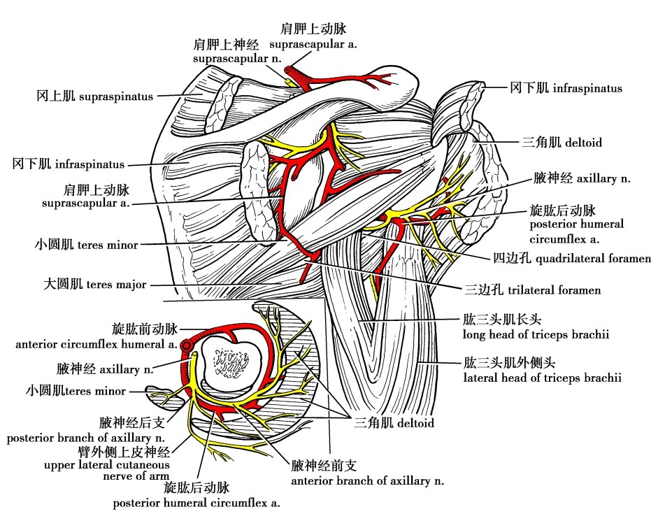
试述大隐静脉的注入部位、主要属支及其收集范围。
- 大隐静脉是全身最长的浅静脉，约70~80cm，起自足背静脉弓的内侧端，走行在内踝前方，股骨内侧髁后方约2cm处，耻骨结节外下方穿隐静脉裂孔注入股静脉，主要收集足、小腿和大腿内侧部以及大腿前部浅层的静脉血
- 属支
- 旋髂浅静脉
- 腹壁浅静脉
- 阴部外静脉
- 股内侧浅静脉
- 股外侧浅静脉
- 临床意义：大隐静脉在内踝前方的位置表浅固定，临床上常在此行大隐静脉切开以进行输液或注射
胸前区腋区深层、股前内侧区深层
试述腋动脉的分段，各段有哪些分支？
-
以胸小肌标志，分为三段
-
第1段：第1肋外缘至胸小肌上缘
- 第2段：被胸小肌覆盖
-
第3段：胸小肌下缘至大圆肌肌腱和背阔肌下缘
-
分支
-
胸上动脉
-
胸肩峰动脉
- 胸外侧动脉
- 肩胛下动脉
- 分为旋肩胛动脉和胸背动脉
- 旋肱前动脉
- 旋肱后动脉（更粗）
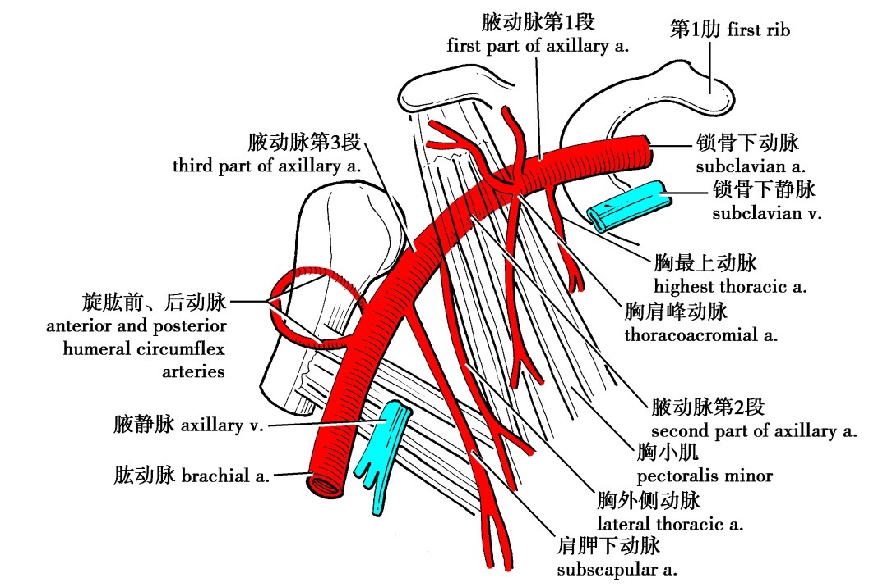
试述臂丛的三个束的位置及主要分支。
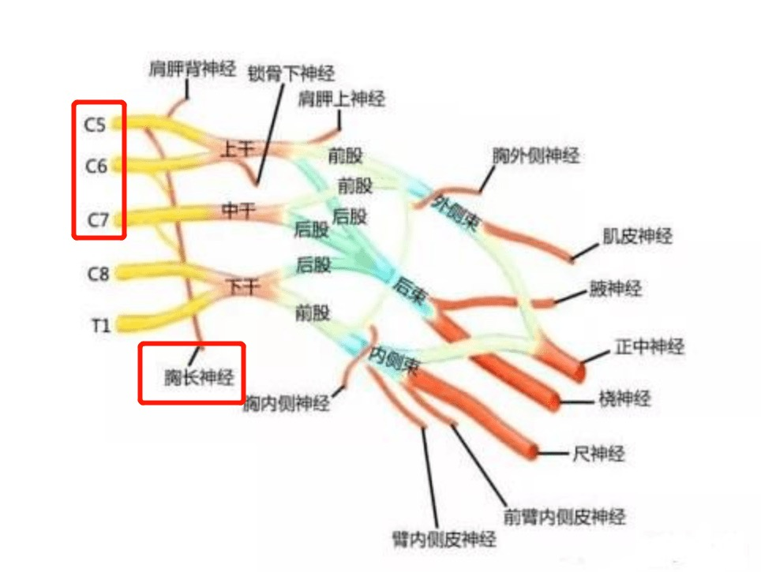
试述正中神经、肌皮神经、尺神经、桡神经和腋神经的支配情况及其损伤表现。
正中神经
-
正中神经主要支配前臂的大部分屈肌、旋前肌和一部分手部肌肉（除拇收肌外的大鱼际肌和第1、2蚓状肌）
-
在手掌面：正中神经经腕管进入手掌并分支
-
返支短而粗，在屈肌支持带的深面或者远侧发自正中神经外侧缘，或者第一指掌侧总神经，勾绕拇短屈肌内侧缘并沿其表面穿行拇短屈肌和拇短展肌之间，分支支配拇短屈肌、拇短展肌、拇对掌肌
-
指掌侧总神经共3支，分支支配第1、2蚓状肌
-
损伤后，拇指对掌功能障碍，手部桡侧半感觉障碍，呈“猿手”畸形，大鱼际肌萎缩，在臂部损伤时可累及全部分支，表现为前臂不能旋前，屈腕无力
- 正中神经极易在前臂和腕部外伤时被损伤。“旋前肌综合征”、“腕管综合征”
肌皮神经
- 由外侧束发出，向外斜穿过喙肱肌，在肱二头肌与肱肌之间下行，发出肌支支配这些肌（前群臂肌）
- 前臂外侧皮神经：支配前臂外侧皮肤感觉
- 损伤可引起前臂屈曲无力，肌肉萎缩和前臂前侧麻木
尺神经
- 在掌面：浅支分布于手掌浅面尺侧1/3，深支主要为肌支，支配小鱼际诸肌、骨间肌、第3、4蚓状肌、拇收肌、拇短屈肌深头
- 在前臂：发出肌支支配尺侧腕屈肌和指深屈肌尺侧半
- 损伤后，拇指不能内收，余指不能收展，不能屈小指和无名指，屈腕、收腕障碍，手部尺侧感觉障碍，由于小鱼际萎缩而平坦，第3、4蚓状肌及骨间肌萎缩，指伸肌使第4、5指的掌指关节过伸，指屈肌使中、末指节屈曲，形成“爪形手”
- 前臂内侧皮神经支配前臂尺侧感觉
桡神经
- 经过肱三头肌长头与内侧头之间沿桡神经沟下行，支配肱三头肌，肱骨中、下1/3交界处穿经外侧肌间隔，至肱桡肌和肱肌之间，在此处分为浅、深二终支，肱骨中段骨折时，桡神经极其容易受到损伤
- 桡神经深支也称为骨间后神经，从桡神经主干分出后，深支穿过旋后肌，进入前臂后区，行走于前臂后群浅、深层伸肌之间，与骨间后动脉伴行，桡神经深支支配除了肱桡肌和桡侧腕长伸肌（由桡神经主干在分叉前支配）以外的所有前臂伸肌
- 桡神经浅支主要是一个感觉神经，从桡神经主干分出后，在肱桡肌的深面下行，负责手背桡侧半（拇指侧）以及桡侧两个半手指（拇指、食指、以及中指桡侧）近节指背的皮肤感觉
- 皮支，在腋窝处发出臂后皮神经，分布于臂后面皮肤；在桡神经沟内发出前臂后皮神经，分布于前臂背面皮肤
- 肌支，支配肱三头肌、肱桡肌和桡侧腕长伸肌、肘肌
- 损伤后，前臂伸肌瘫痪，抬前臂时腕下垂，第1、2掌骨间背面皮肤感觉障碍
试述腋淋巴结的分群及回流途径，思考乳腺癌的淋巴转移途径。
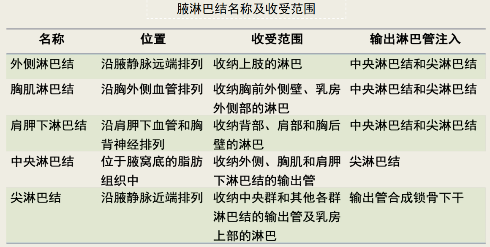
试述阔筋膜的特点及形成的结构；
股部深筋膜称为阔筋膜，坚韧而致密，包裹整个大腿
-
髂胫束：起自髂嵴前部的外侧缘，下端附着于胫骨外侧髁
-
隐静脉裂孔：为腹股沟韧带中内1/3交界处下方一横指处阔筋膜形成的一个卵圆形凹陷
试述肌腔隙和血管腔隙的境界和内容；
- 位置：位于腹股沟韧带与髋骨之间的腹股沟后隙，是腹、盆腔与股前区的重要通道，被髂耻弓分为两部分
- 肌腔隙：前界为腹股沟韧带外侧部，后外界为髂骨，内侧界为髂耻弓，该腔隙内有髂腰肌、股神经和股外侧皮神经通过
- 血管腔隙：前界为腹股沟韧带的内侧部，后内界为耻骨肌筋膜和耻骨梳韧带，内侧界为腔隙韧带，后外界为髂耻弓，内有股鞘及其包绕的股动脉、股静脉和股管通过
- 股鞘⭐️：为腹横筋膜及髂筋膜向下延续，包绕股动静脉上段和股管的筋膜鞘，位于腹股沟韧带内侧半和阔筋膜的深面，呈长约3～4cm的漏斗状。鞘内由二纵隔将它分为外中内三格，外侧格容纳股动脉；中间隔容纳股静脉；内侧格形成股管，内有股深淋巴结和脂肪组织
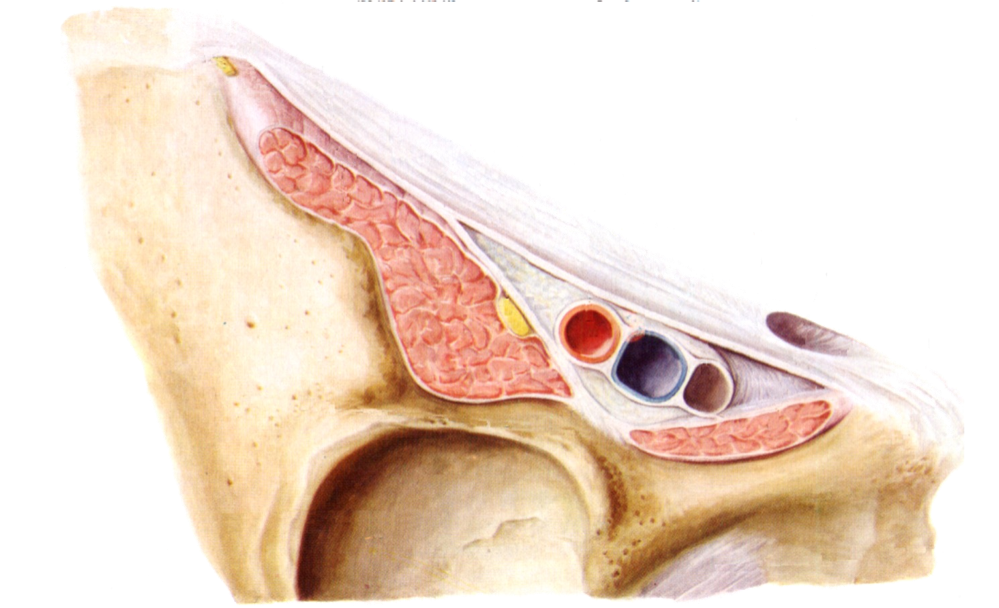
试述股三角的境界和内容；
位于股前内侧区的上1/3部，由肌围成一个底向上、尖向下的倒三角凹陷区域，其尖向下接续收肌管
- 上界：腹股沟韧带
- 下外界：缝匠肌内侧缘
- 下内界：长收肌内侧缘
- 前壁：阔筋膜和筛筋膜
- 后壁：髂腰肌、耻骨肌、长收肌
内容有：股神经、股鞘（股动脉、股静脉、股管和淋巴结）
试述股鞘的概念、分区及各腔的内容；
包裹股血管和股管的一个漏斗形股筋膜鞘，由腹横筋膜和髂筋膜向下延伸形成，长3~4cm，分为三个腔
- 外侧腔：股动脉
- 中间腔：股静脉
- 内侧腔：股管
试述股管的境界和上口的特点；
- 底向上的锥形筋膜管，长1.3~1.5cm，上口为股环、下为盲端
- 境界：前界为腹股沟韧带、后界为耻骨梳韧带、内侧为腔隙韧带、外侧为股静脉的纤维隔
- 股环：内容为淋巴结和脂肪组织
- 股疝：疝囊通过股环，经过股管向卵圆窝突出的疝称为股疝
试述收肌管的境界和内容。
-
收肌管是股三角和腘窝之间的通道，所以股三角和腘窝之间的炎症可以相互蔓延
-
境界
-
前：大收肌腱板
-
后：长收肌和大收肌
-
外：股内侧肌
-
上：股三角尖
-
下：收肌腱裂孔
-
结构：前为股神经和隐神经和膝降动脉，中为股动脉，后为股静脉
-
通过收肌管者为：股动脉和股静脉
-
途中穿出收肌管壁者：隐神经和膝降动脉
股动脉的延续
- 腘动脉
- 胫前动脉——足背动脉
- 胫后动脉——腓动脉，足底内、外侧动脉——足底弓
臂前区、肘窝、前臂前区、小腿前外侧
臂前区浅筋膜内头静脉、贵要静脉的走行
-
头静脉：手背静脉网桡侧——肱二头肌外侧沟——三角肌胸大肌间沟——腋静脉或锁骨下静脉
-
贵要静脉：手背静脉网——肱二头肌内侧沟——肱静脉或腋静脉
前臂部浅筋膜内皮神经的来源与分布
- 肋间臂神经：来自第二（胸神经）肋间神经外侧皮支
- 臂内侧皮神经：来自臂丛内侧束
- 臂外侧下皮神经：来自桡神经
- 前臂内侧皮神经：来自臂丛内侧束
- 临床意义：位置表浅，变异少，有足够的长度和直径，常被用于周围神经外伤的移植体
臂肌的分群、各肌的起止、作用及神经支配
肱二头肌
- 长头起自肩胛骨盂上结节
- 短头起自肩胛骨喙突
- 止点：桡骨粗隆
- 作用是屈肩、屈肘、使前臂旋后
- 肌皮神经支配（C5~7）
喙肱肌
- 起点：肩胛骨喙突
- 止点：肱骨中部内侧
- 屈肩、上臂内收
- 神经支配：肌皮神经（C5~7）
肱肌
- 起点：肱骨前面下半
- 止点：尺骨粗隆
- 屈肘关节
- 神经支配：肌皮神经（C5~7）
肱动脉的起止、行程、分支与分布
在大圆肌腱下缘续于腋动脉，沿肱二头肌内侧沟下行至肘窝，位置表浅，可触及，肱动脉在臂上份居于肱骨内侧，臂中份局前中方，臂下份居于前方，分支有：
- 肱深动脉：伴行桡神经进入肱骨肌管，分布于肱三头肌和肱肌
- 尺侧上副动脉：参与肘关节网构成
- 尺侧下副动脉，参与肘关节网构成
尺神经在臂部的走行特点
- 在臂上部行于肱动脉内侧，至臂中点附近离开肱动脉，向后穿过内侧肌间隔，进入臂后区，尺神经在臂部无分支
肘窝的境界、内容以及肘窝内血管神经的排列关系。
境界：
- 上界：肱骨内外上髁的连线
- 下外侧界：肱桡肌
- 下内侧界：旋前圆肌
- 顶：皮肤、浅筋膜、深筋膜、肱二头肌腱膜
- 底：肱肌、旋后肌和肘关节囊
内容：
- 肱二头肌肌腱、肱动脉、肱静脉、肘深淋巴结、正中神经、前臂外侧皮神经、桡神经
- 桡神经起于肱肌和肱桡肌之间，约在肱骨外上髁前方或稍下方分为浅深两支
- 前臂外侧皮神经经过肱二头肌腱外侧穿出深筋膜
- 内由尺侧向桡侧依次为正中神经、肱动脉及其两条伴行静脉、肱二头肌腱和桡神经及其分支
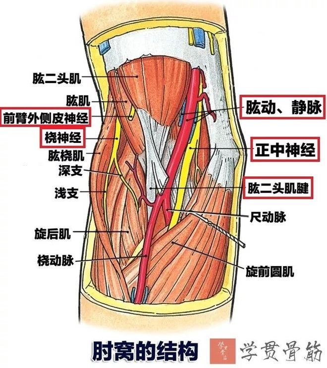
前臂肌的分群、各肌的起止、作用及神经支配
第一层：肱桡肌、旋前圆肌、桡侧腕屈肌、掌长肌、尺侧腕屈肌
- 肱桡肌起自肱骨外上髁的近端1/3，止于桡骨茎突的底部外侧，桡神经支配
- 其余四肌均起自肱骨内上髁，大部分为正中神经支配，尺神经支配（尺侧腕屈肌和指深屈肌尺侧半）
第二层：指浅屈肌
- 起自肱骨内上髁，桡骨上半部前面，止于第2至5指中节指骨底两侧，正中神经支配
第三层：拇长屈肌、指深屈肌
- 拇长屈肌起自桡骨近侧端前面，止于拇指远节指骨底
- 指深屈肌起自尺骨近侧端前面和骨间膜上部，止于第2至5远节指骨底前面
第四层：旋前方肌
- 附着于桡骨、尺骨和前臂骨间膜
前臂屈肌后间隙的境界和临床意义。
- 位于前臂远侧1/4段的潜在间隙
境界
- 内侧界：尺侧腕屈肌，前臂筋膜
- 外侧界：桡侧腕屈肌，前臂筋膜
- 前界：指深屈肌，拇长屈肌腱
- 后界：旋前方肌
临床意义：此间隙向远侧经腕管通掌中间隙，两者之一有感染时，可以相互蔓延
腓总神经、腓深神经和腓浅神经的行程、分布及腓总神经损伤后出现的症状
腓总神经
- 起自坐骨神经，沿腘窝外侧缘下行，绕过腓骨颈（这是最关键也是最易受损的部位），分为两个终末支：腓浅神经和腓深神经
- 腓深神经
- 于腓骨与腓骨长肌之间穿出，进入前骨筋膜鞘，与胫前动脉伴行，走在骨间膜表面，先位于胫骨前肌和趾长伸肌之间，后位于胫骨前肌和拇长伸肌之间。
- 运动纤维支配小腿前群肌（胫骨前肌、趾长伸肌、拇长伸肌、第三腓骨肌）和足背的拇短伸肌、趾短伸肌。
- 足下垂：行走时为防止足尖拖地，患者会采取“跨阈步态”，即过分抬高患肢，像跨门槛一样。
- 感觉纤维支配第1、2趾相对缘的背侧皮肤
- 腓浅神经
- 起始于腓骨长肌深面，走在小腿外侧骨筋膜鞘内，下行于腓骨长、短肌与趾长伸肌之间
- 运动支配： 小腿外侧群肌（腓骨长肌、腓骨短肌）
- 患足表现为“马蹄内翻足”（即足下垂伴内翻）
- 感觉支配： 支配小腿前外侧下部、足背及趾背的大部分皮肤（第1、2趾相对缘除外）
- 足背内侧皮神经和足背中间皮神经（足背外侧皮神经是腓肠神经的终支）
- 腓总神经在腓骨颈处的位置最为表浅易受损伤，受伤后导致小腿前、外侧群肌功能丧失
- 腓总神经损伤时表现为：
- 运动异常：足不能背屈，趾不能伸，足下垂且内翻，呈“马蹄内翻足＂畸形。行走时呈＂跨阙步态＂
- 感觉异常：小腿前、外侧面及足背区出现明显的感觉障碍
腕部手掌足背
鼻烟窝的境界和内容及其临床意义
- 桡侧界：拇长展肌腱、拇短伸肌腱
- 尺侧界：拇长伸肌腱
- 近侧：桡骨茎突
- 窝底：手舟骨，大多角骨
临床意义：有桡动脉穿过，可在此处做桡动脉结扎
腕管的构成及其内容及其临床意义
- 屈肌支持带和腕骨沟共同围成
- 管内有：指浅、深屈肌腱及屈肌总腱鞘，拇长屈肌腱和正中神经穿过
- 临床意义：正中神经紧贴屈肌支持带深面经过，受压时可引起腕管综合征
试述腕尺侧管、腕桡侧管和腕管的境界及穿行结构；
- 腕尺侧管中穿过尺动静脉和尺神经，在腕掌侧韧带和屈肌支持带之间，（其中还有掌长肌腱）
- 腕桡侧管中穿过桡侧腕长屈肌腱，由屈肌支持带和手舟骨和大多角骨的骨面构成
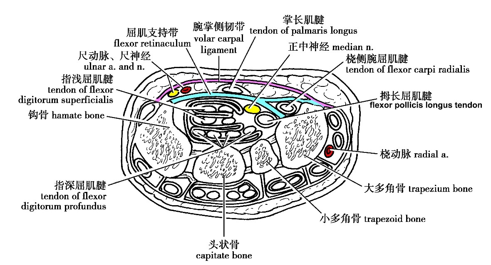
试述掌中间隙和鱼际间隙的境界及炎症蔓延途径；
掌中间隙
- 前界为3~5指屈肌腱和第2~4蚓状肌，屈肌总腱鞘
- 后界为骨间掌侧筋膜
- 外侧为掌中隔
- 内侧为内侧肌间隔
- 经腕管通过前臂屈肌后间隙，远侧经过第2、3、4蚓状肌管达指背
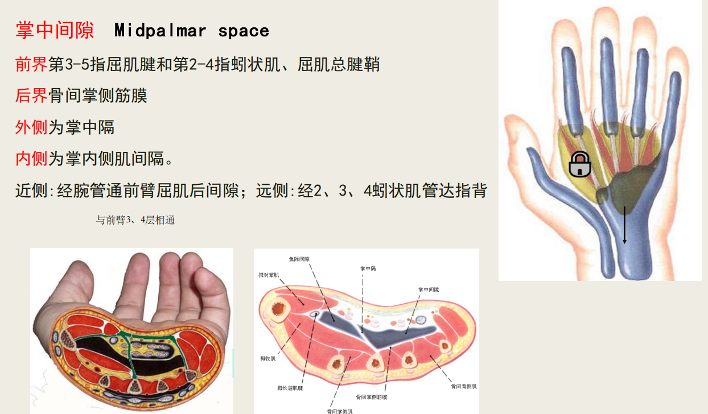
鱼际间隙
- 前界为掌中隔前部，示指屈肌腱和第1蚓状肌
- 后界为拇收肌筋膜
- 外侧界为外侧肌间隔
- 内侧界为掌中隔后部
- 此间隙远端经过第1蚓状肌管通向示指指背，近端为盲端

- 食指的感染最易引起鱼际间隙感染，而中指和环指的感染最易引起掌中间隙感染，掌中间隙感染会导致掌心隆起，而鱼际间隙感染会导致“虎口”消失
掌浅弓、掌深弓的组成、位置及主要分支；
掌浅弓
- 位于掌腱膜的深面，指屈肌腱和蚓状肌的浅面
- 桡动脉掌浅支和尺动脉终端构成
- 分出3条指掌侧总动脉，1条小指尺掌侧动脉
掌深弓
- 位于骨间掌侧肌与骨间掌侧筋膜之间
- 桡动脉的终端与尺动脉掌深支构成
- 发出三条掌心动脉，在掌指关节处与指掌侧总动脉吻合，拇主要动脉由桡动脉发出
手肌的分群和各肌的名称及神经支配；
flowchart TD
A[手肌] --> B["外侧群/鱼际肌<br>(4块)"]
A --> C[中间群]
A --> D["内侧群/小鱼际肌<br>(3块)<br>全部由尺神经支配"]
B --> B1["拇短展肌<br>拇短屈肌<br>拇对掌肌"]
B1 --> B11["由正中神经支配"]
B --> B2["拇收肌"]
B2 --> B21["由尺神经支配"]
C --> C1["蚓状肌(4块)"]
C1 --> C11["第1、2蚓状肌<br>由正中神经支配"]
C1 --> C12["第3、4蚓状肌<br>由尺神经支配"]
C --> C2["骨间掌侧肌(3块)<br>全部由尺神经支配"]
C --> C3["骨间背侧肌(4块)<br>全部由尺神经支配"]
flowchart TD
A[手肌与常见损伤] --> B["手肌分群与功能<br>（手内在肌）"]
A --> C["核心神经支配"]
A --> D["典型神经损伤表现"]
B --> B1["外侧群（鱼际肌）"]
B1 --> B11["拇短展肌<br>拇对掌肌<br>拇短屈肌"]
B11 --> B111["功能：<br>拇指对掌、外展、屈曲"]
B1 --> B12["拇收肌"]
B12 --> B121["功能：拇指内收"]
B --> B2["内侧群（小鱼际肌）"]
B2 --> B21["小指展肌<br>小指对掌肌<br>小指短屈肌"]
B21 --> B211["功能：<br>小指对掌、外展、屈曲"]
B --> B3["中间群（核心协调肌）"]
B3 --> B31["蚓状肌（4块）"]
B31 --> B311["核心功能：<br>屈掌指关节<br>伸指间关节<br>（屈掌伸指）"]
B3 --> B32["骨间肌（7块）"]
B32 --> B321["骨间掌侧肌（3块）<br>功能：手指内收"]
B32 --> B322["骨间背侧肌（4块）<br>功能：手指外展"]
B32 --> B323["共同功能：<br>协同蚓状肌'屈掌伸指'"]
C --> C1["正中神经"]
C1 --> C11["支配：<br>鱼际肌（除拇收肌）<br>第1、2蚓状肌"]
C --> C2["尺神经"]
C2 --> C21["支配：<br>小鱼际肌、全部骨间肌<br>第3、4蚓状肌、拇收肌<br>（手内在肌主神经）"]
D --> D1["正中神经损伤"]
D1 --> D11["猿手"]
D11 --> D111["表现：<br>鱼际肌萎缩<br>拇指不能对掌<br>手掌扁平"]
D --> D2["尺神经损伤"]
D2 --> D21["爪形手"]
D21 --> D211["表现：<br>掌指关节过伸<br>指间关节屈曲<br>（尤其小指和环指）"]
D2 --> D22["Froment征阳性"]
D22 --> D221["表现：<br>拇指示指捏纸时<br>拇指指间关节屈曲"]
D2 --> D23["运动障碍"]
D23 --> D231["手指内收外展不能<br>（骨间肌瘫痪）"]
D --> D3["桡神经损伤"]
D3 --> D31["垂腕"]
D31 --> D311["表现：<br>腕关节及各手指<br>不能伸直"]
由浅入深叙述手掌的层次结构。
- 浅层：皮肤，浅筋膜
- 中层：掌腱膜，掌浅弓及其分支，尺神经浅支及其分支，正中神经及其分支，指浅、深屈肌腱和蚓状肌及其屈肌总腱鞘，筋膜间隙
- 深层：骨间掌侧筋膜，掌深弓及分支，尺神经深支及其分支，骨间肌及掌骨
试述足背皮神经的来源和伴行关系
- 隐神经
- 足背内侧皮神经和足背中间皮神经
- 足背外侧皮神经
- 腓深神经终末支
flowchart TD
A[足背皮神经] --> B["隐神经"]
A --> C["腓浅神经"]
A --> D["腓深神经"]
A --> E["腓肠神经"]
B --> B1["伴行：<br>大隐静脉"]
C --> C1["伴行：<br>腓浅静脉"]
D --> D1["伴行：<br>胫前动脉"]
E --> E1["伴行：<br>小隐静脉"]
B --> B2["分布区：<br>足背内侧"]
C --> C2["分布区：<br>足背中部大部分"]
D --> D2["分布区：<br>第1-2趾间"]
E --> E2["分布区：<br>足背外侧"]
上下肢后区1
肘后三角和肘外侧三角的位置关系；
肘后三角：肱骨内外上髁与尺骨鹰嘴之间形成一个等腰三角形
- 肘关节脱位时，肘后三角的关系改变
肘外侧三角：屈肘90度时，从桡侧见肱骨外上髁、桡骨头和尺骨鹰嘴之间形成的等腰三角形，其尖向前，此三角的中心正对肘关节腔
- 肘关节穿刺时，肘外侧三角进针
桡神经、尺神经在臂部的走行特点；
-
桡神经：在大圆肌下缘与肱骨交角处，伴肱深血管向外下进入肱肌肌管，至臂中、下1/3交界处与桡侧副动脉一起穿臂外侧肌间隔，达肘窝
-
尺神经：伴行尺侧上副动脉，沿臂内侧肌间隔后方下行至尺神经沟
肱骨肌管的构成与通行结构；
- 由肱三头肌与肱骨桡神经沟构成
- 桡神经与肱深血管通过
临床意义：肱骨干骨折
肌腱袖的构成与临床意义。
- 肩带肌中的冈上肌、冈下肌、小圆肌、肩胛下肌的腱经过肩关节周围时，与关节囊愈着，形成腱膜结构包绕肩关节的上、后、前方
- 稳定肩关节，肩关节脱位或扭伤时，可伴有肌腱袖的撕裂
试述掌握梨状肌上孔和下孔的境界及其穿行物。
梨状肌上孔
- 上界：坐骨大孔上缘
- 下界：梨状肌上缘
- 臀上神经、臀上动脉、臀上静脉（从外向内）
梨状肌下孔
- 上界：梨状肌下缘
-
下界：骶结节韧带、骶棘韧带
-
从外向内：坐骨神经、股后皮神经、臀下神经、臀下动脉、臀下静脉、阴部内静脉、阴部内动脉、阴部神经
梨状肌综合征： 由于梨状肌的损伤、痉挛或解剖变异（如坐骨神经穿行梨状肌），压迫了从其下孔穿出的坐骨神经，引起一系列以臀腿部放射性疼痛为主要表现的症状。这是坐骨神经痛的常见原因之一
试述穿经坐骨小孔的结构。
- 由骶结节韧带、骶棘韧带和坐骨棘围成
- 阴部内动脉、阴部内静脉、阴部神经
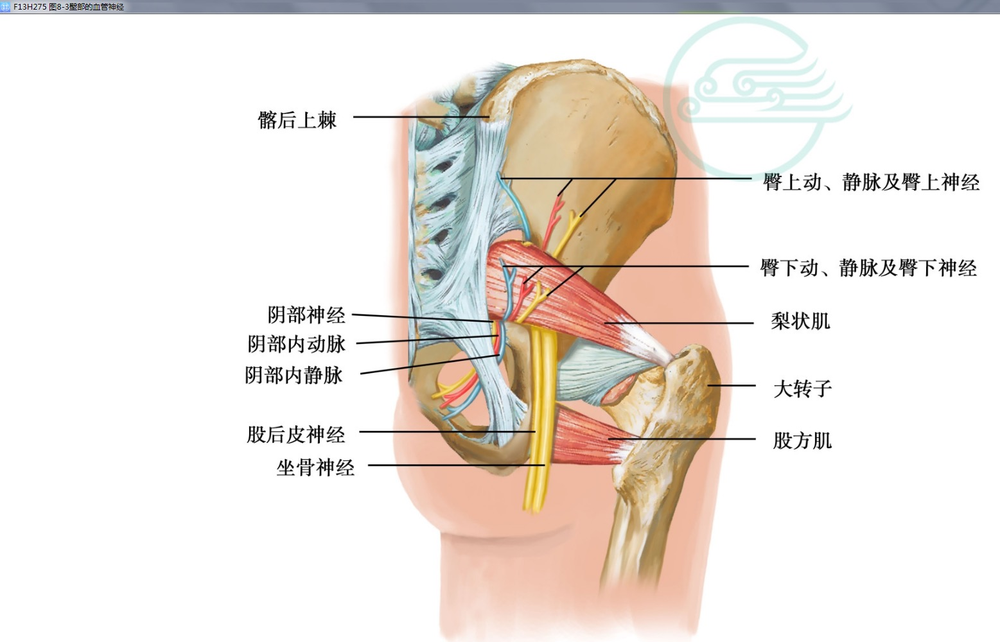
试述腘窝的解剖层次，静脉、动脉和神经的排列关系
为膝后区的一菱形凹陷
- 外上界为股二头肌腱
- 内上界为半腱肌和半膜肌
- 内下和外下界分别为腓肠肌内、外侧头
- 顶为：腘筋膜
- 底为：股骨腘面、膝关节囊后部，腘斜韧带，腘肌
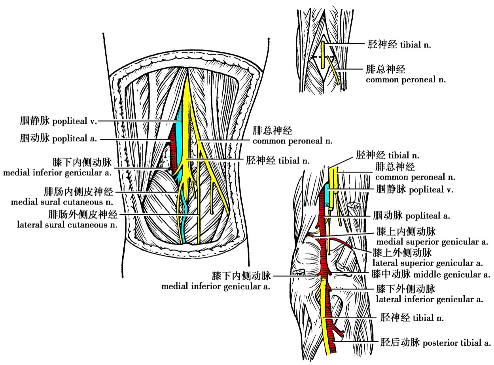
试述坐骨神经、胫神经走行、伴行结构及支配范围
- 坐骨神经：骶丛分支，经梨状肌下孔出骨盆，经坐骨结节与大转子之间至大腿后面达腘窝。多在腘窝上角附近分为胫神经和腓总神经。在股部发肌支支配大收肌坐骨部、半腱肌、半膜肌、股二头肌；
- 胫神经tibial n：在小腿经比目鱼肌深面伴胫后动脉下降，经过内踝后方，在屈肌支持带深面分为足底内外侧神经。支配足底诸肌、腓肠肌、跖肌、比目鱼肌、腘肌、胫骨后肌、拇长屈肌和趾长屈肌，分布足底皮肤
- 损伤后表现：足不能跖屈和内翻（小腿三头肌和胫骨后肌瘫痪），因而足呈背屈、外翻，呈“钩状足”畸形。感觉丧失区主要在足底。
上下肢后区2
试述伸肌支持带的位置、所形成骨纤维鞘的名称及通过的结构
腕后区深层，形成6个骨纤维管
- 拇长展肌和拇短伸肌及其腱鞘
- 桡侧腕长伸肌和桡侧腕短伸肌及其腱鞘
- 拇长伸肌及其腱鞘
- 指伸肌和示指伸肌及其腱鞘
- 小指伸肌及其腱鞘
- 尺侧腕伸肌及其腱鞘
试述小隐静脉在小腿部的走行、交通及其临床意义；
- 起始于足背静脉弓的外侧端
- 经过外踝后方，行于小腿后正中线上行注入腘静脉
- 下肢静脉曲张、血栓性浅静脉炎、外科手术（高位结扎与剥脱术）
胫神经
- 伴胫后血管行于小腿后群浅深肌间，并发出分支支配这些肌（经比目鱼肌深面伴胫后动脉下降，经过内踝后方）在屈肌支持带的深方分足底内外侧神经，支配足底诸肌
- 损伤后，小腿后群肌及足底肌瘫痪，导致足不能跖屈（无法提踵）、内翻无力，由于拮抗肌（小腿前群和外群肌）占优势，患足表现为背屈和外翻位，即“勾状足”畸形
- 感觉丧失区主要在足底
腓总神经
- 起自坐骨神经，沿腘窝外侧缘下行，绕过腓骨颈（这是最关键也是最易受损的部位），分为两个终末支：腓浅神经和腓深神经
- 腓总神经损伤时表现为：足不能背屈，趾不能伸，足下垂且内翻，呈“马蹄内翻足＂畸形。行走时呈＂跨阙步态＂时小腿前、外侧面及足背区出现明显的感觉障碍
坐骨神经sciatic n
- 骶丛分支，经梨状肌下孔出骨盆，经坐骨结节与大转子之间至大腿后面达腘窝。多在腘窝上角附近分为胫神经和腓总神经。在股部发肌支支配大收肌坐骨部、半腱肌、半膜肌、股二头肌；
踝管的位置，构成和通过的结构⭐️
由内踝、跟骨内侧面和屈肌支持带共同围成
- 屈肌支持带向深面发出3个纤维隔，将踝管分为4个骨纤维管，通过的结构由前至后依次为
- 胫骨后肌肌腱及其腱鞘
- 趾长屈肌肌腱及其腱鞘
- 胫后动脉、静脉及胫神经
- 拇长屈肌肌腱及其腱鞘
踝关节前方经过结构由内而外分别是哪些
- 踝关节前方经过结构由内而外分别是：胫骨前肌腱及腱鞘，踇长伸肌腱及腱鞘，足背血管，腓深神经，趾长伸肌肌腱及腱鞘
颈部1
试述颈部筋膜的层次、包裹的结构及主要的筋膜间隙位置；
封套筋膜
- 包裹：斜方肌、胸锁乳突肌、下颌下腺、腮腺
- 形成胸骨上间隙（气管切开经过此间隙）
- 颈深筋膜浅层分为两层，分别附着于胸骨柄前后缘，两层之间为此间隙
- 内有颈静脉弓，颈前静脉下段，胸锁乳突肌胸骨头
- 锁骨上间隙：颈浅筋膜在锁骨上分两层而成，内有颈前静脉，颈外静脉末端
内脏筋膜
- 包裹咽、食管颈部、气管颈部，前下部覆盖气管，称为气管前筋膜，形成甲状腺鞘，颈动脉鞘，后上部包裹颊肌和咽缩肌，称为颊咽筋膜
- 形成气管前间隙
- 气管前筋膜与气管颈部之间，内有甲状腺最下动脉，甲状腺下静脉，甲状腺奇静脉丛，头臂干，左头臂静脉等
- 气管切开必经过此间隙
椎前筋膜
-
位于颈深肌群的浅面，覆盖臂丛、颈交感干、膈神经、锁骨下动静脉
-
向下外包绕腋血管及臂丛形成腋鞘
- 椎前间隙：脊柱颈部、颈深肌群与椎前筋膜之间
试述颈部的分部和划区、主要体表标志 ；
- 颈前区
- 舌骨上区
- 刻下三角
- 下颌下三角
- 舌骨下区
- 颈动脉三角
- 肌三角
- 胸锁乳突肌区
- 颈外区
- 枕三角
-
锁骨上大窝（三角）
-
体表标志有：舌骨、甲状软骨、环状软骨、颈动脉结节、胸锁乳突肌、胸骨上窝、锁骨上大窝
试述下颌下三角的构成、内容物及其毗邻关系。
- 境界：二腹肌前后腹、下颌骨体下缘
- 内容物
- 浅面有皮肤、浅筋膜、颈阔肌和颈筋膜浅层
-
下颌舌骨肌浅面
- 下颌下腺、面动静脉、下颌下淋巴结
-
下颌舌骨肌深面
- 舌神经（三叉N下颌N的分支），在下颌下腺深部内上方与舌骨舌肌之间弓形向前入舌，舌前2/3的一般感觉和味觉（通过鼓索神经）
- 下颌下神经节
- 舌下神经：下颌下腺深部的内下方，支配舌内外肌
- 下颌下腺管
-
舌骨舌肌深面
- 舌动静脉：舌动脉发自颈外动脉，在舌下N与二腹肌中间腱之间前行至舌骨舌肌后缘深面入舌
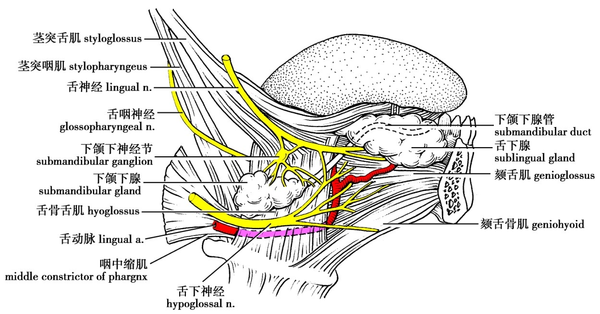
颈部2
试述颈动脉三角的境界，以及由浅入深的层次结构
境界：胸锁乳突肌上份前缘、肩胛舌骨肌上腹、二腹肌后腹
- 浅面由浅入深依次为：皮肤、浅筋膜、颈阔肌、颈深筋膜浅层；颈动脉鞘及其内容物，深面为椎前筋膜、交感干、内侧为咽侧壁及其筋膜
- 包括：颈总动脉及其分支、颈内静脉及其分支、迷走神经及其分支、舌下神经及其分支
试述颈动脉鞘的位置，内容及毗邻关系。
- 外侧：胸锁乳突肌、舌骨下肌群、颈袢
- 内侧：咽、食管、喉、气管、甲状腺、喉返神经
- 后方：椎前筋膜、颈交感干、膈神经、椎前肌肉
- 内容有颈内静脉、颈总动脉和颈内动脉，迷走神经
- 颈外动脉的分支：甲状腺上动脉、舌动脉、面动脉、枕动脉、咽升动脉；终支为上颌动脉与颞浅动脉
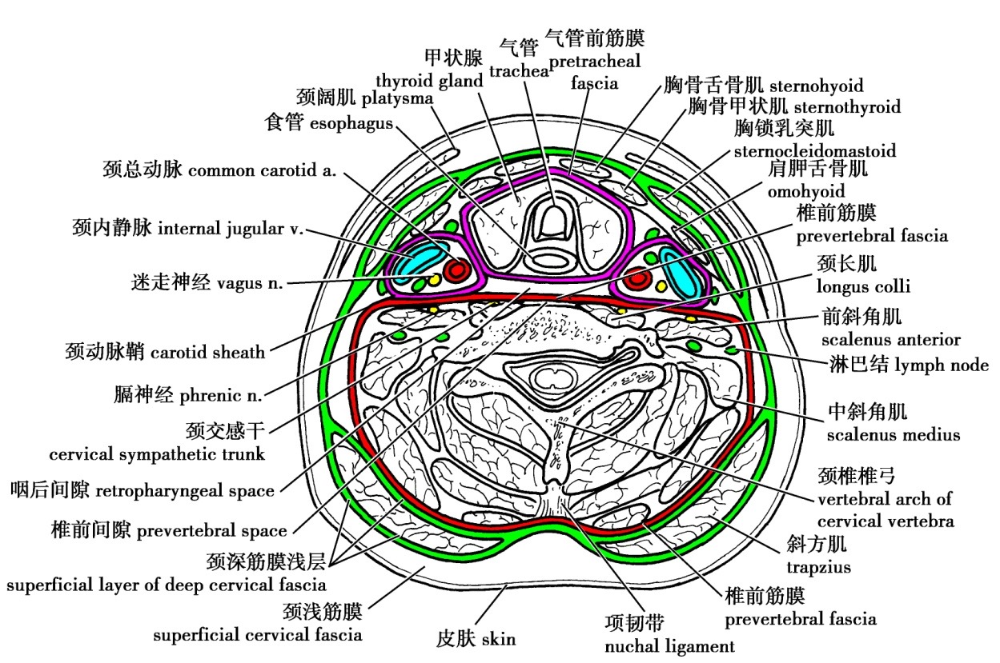
简述甲状腺的形态、被膜、位置、毗邻、动脉与喉的神经的位置关系及其临床意义。
- 形态：H形，侧叶、峡、锥状叶，两侧叶位于喉下部和气管的前外侧，上达甲状软骨的中部，下至第6气管软骨，峡位于第2~4气管软骨前方，锥状叶起自甲状腺峡部
- 被膜：
- 甲状腺假被膜：即甲状腺鞘，由气管前筋膜包裹甲状腺而成；也构成甲状腺悬韧带
- 甲状腺真被膜：即甲状腺纤维囊
-
两者之间的间隙为囊鞘间隙（内有疏松结缔组织、血管、神经和甲状旁腺）
-
位置毗邻：
- 前面：皮肤、浅筋膜、封套筋膜、舌骨下肌群和气管前筋膜
- 侧叶后内侧：喉和气管、咽和食管、喉返神经
- 侧叶后外侧：颈动脉鞘、颈交感干
- 甲状腺肿大时
- 呼吸困难——压迫气管
- 吞咽困难——压迫食管
- 声音嘶哑——压迫喉返神经
- 出现Horner综合征：压迫颈交感干
- 甲状腺上动脉（来自颈外动脉）与喉上神经
- 喉上神经内支：穿甲状舌骨膜入喉，分布于声门裂以上的喉粘膜、会厌、舌根
- 喉上神经外支：伴随甲状腺上动脉行向前下方，靠近甲状腺上端时离开动脉，发出肌支支配环甲肌和咽下缩肌
- 在甲状腺次全手术时，结扎甲状腺上动脉要紧贴甲状腺侧叶上极，以免损伤喉上神经外支。
- 甲状腺下动脉（来自甲状颈干）与喉返神经
- 喉返神经行至咽下缩肌上缘改名为喉下神经，于环甲关节后方入喉
- 喉下神经：运动纤维支配除环甲肌以外的所有喉肌，感觉纤维分布于声门裂以下的喉粘膜
- 左喉返神经行程较长，位置深，多在甲状腺下动脉后方与其交叉
- 在甲状腺次全手术时，结扎甲状腺下动脉要远离甲状腺侧叶下极，以免损伤喉返神经。
| 特征 | 喉上神经损伤 | 喉返神经损伤 |
|---|---|---|
| 主要功能 | 声带上区感觉、环甲肌运动（紧张声带） | 所有其他喉内肌运动（外展、内收、松弛声带） |
| 核心损伤表现 | 声音低沉（外支）、无力、易疲劳；误咽、呛咳（内支） | 声音嘶哑（单侧）；呼吸困难（双侧） |
试述甲状腺手术由浅入深经过哪些层次？
-
层次：皮肤、浅筋膜、颈阔肌、颈深筋膜浅层，舌骨下肌群和气管前筋膜
-
注意事项
①头应保持正中位置，并尽量后仰，使气管接近体表，以免伤及食管及周围的血管和神经；
②对幼儿行气管切开时，应不低于第5气管软骨，以免伤及胸腺、左头臂静脉和主动脉弓等。
名词解释：颈动脉鞘、颈袢、颈动脉窦、甲状腺悬韧带、甲状腺囊鞘间隙
颈动脉鞘是内脏筋膜向两侧延伸形成的致密筋膜鞘，上起颅底，下续纵隔
- 由浅入深（由前外至后内）依次为：
- 颈内静脉
- 颈总动脉（及其分叉为颈内、外动脉）
- 迷走神经
颈袢（又称舌下神经袢）是一个支配舌骨下肌群（胸骨舌骨肌、胸骨甲状肌、肩胛舌骨肌）的神经环路
-
构成：
-
由第1～3颈神经前支的分支构成。第1颈神经前支的部分纤维随舌下神经走行，在颈动脉三角内离开此神经，称为舌下神经降支，沿颈内动脉及颈总动脉浅面下行，又名颈袢上根。第2、3颈神经前支的纤维，经过颈丛联合，发出降支，称为颈袢下根，沿颈内静脉浅面下行。上、下两根在肩胛舌骨肌中间腱上缘，适平环状软骨弓处，在颈动脉鞘浅面合成颈袢
-
上根： 来自舌下神经，内含第1颈神经的纤维
-
下根： 来自颈丛的第2、3颈神经纤维
-
吻合位置： 两根在颈动脉鞘的浅面（约平环状软骨水平，C6）吻合形成颈袢
-
颈动脉窦是颈总动脉末端和颈内动脉起始部的管壁局部膨大所形成的特殊结构
- 能感知动脉血压的变化。当血压升高时，它受到刺激，通过舌咽神经将信号传至脑干的心血管中枢，反射性地引起心率减慢、血管扩张，从而使血压下降
甲状腺悬韧带是甲状腺假被膜（气管前筋膜）在甲状腺侧叶内侧增厚形成的纤维束
- 将甲状腺侧叶的背面内侧连接到喉部（环状软骨侧面以及第1、2气管软骨环）
甲状腺囊鞘间隙是位于甲状腺真被膜（纤维囊）和假被膜（气管前筋膜形成的甲状腺鞘）之间的潜在性间隙
- 间隙内含有疏松结缔组织、血管（尤其是甲状腺上、下动脉的终末支）、甲状旁腺以及丰富的淋巴管
- 使甲状腺在吞咽时能灵活地上下移动
颈部3
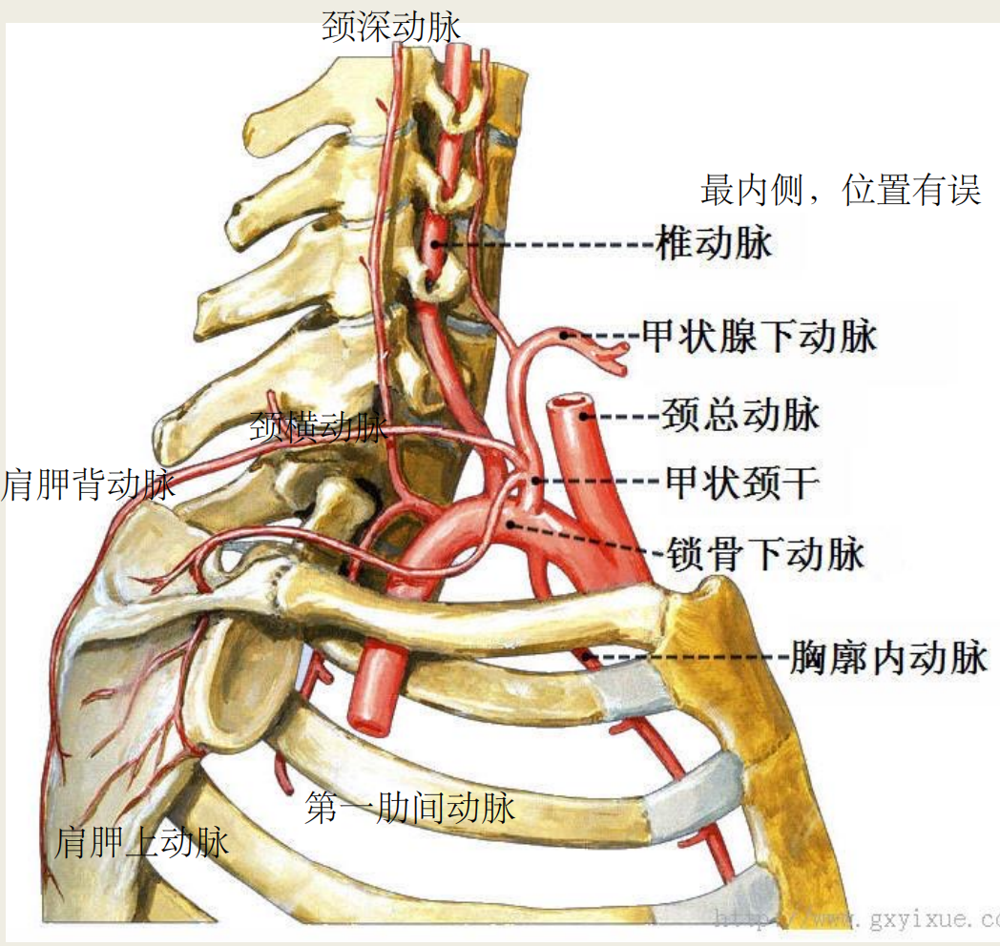
锁骨下静脉与锁骨下动脉在颈根部的行走和局部位置有何不同?
锁骨下动脉
- 走行：绕胸膜顶（高出锁骨内侧1/3上缘2~3cm）的前上方，向外穿斜角肌间隙，至第一肋外缘，以前斜角肌为界分为三段
- 第1段：位于前斜角肌的内侧，胸膜顶的前方
- 椎动脉
- 胸廓内动脉
- 甲状颈干（分支甲状腺下动脉、肩胛上动脉、颈横动脉）
- 肋颈干
- 第2段：位于前斜角肌的后方，上方紧贴臂丛各干，下方跨越胸膜顶
- 第3段：位于前斜角肌的外侧：第一肋的上方
- 前下方有锁骨下动脉，外上方为臂丛
锁骨下静脉
- 行程：自第一肋外缘续于腋静脉，经过锁骨与前斜角肌之间，向内侧与颈内静脉合成头臂静脉
- 锁骨下静脉与第1肋、锁骨下肌和前斜角肌的筋膜相连，伤后易空气栓塞
试述前斜角肌的毗邻关系。
颈根部是指颈部与胸部之间的接壤区，前界为胸骨柄，后界为第1胸椎体，两侧为第1肋，中心标志为前斜角肌，前斜角肌的毗邻有：
- 前内侧的纵行结构：主要往来于颈胸之间，脏器（气管、食管、肺尖和胸膜顶）、血管（颈总动脉、颈内静脉）、胸导管、神经（迷走神经、膈神经、颈交感干）
- 前后外侧的横行结构：主要往来于颈、胸与上肢之间，如血管（锁骨下动静脉）神经（臂丛）等
颈丛和臂丛的分支和支配
颈丛
- 皮支
- 肌支：支配肩胛提肌，斜方肌，椎前肌
臂丛
- 肩胛背神经：支配菱形肌
- 肩胛上神经：支配冈上、下肌
- 胸长神经：支配前锯肌
试述椎动脉三角的境界及内容。
境界：
- 下界：锁骨下动脉第1段
- 内侧界：颈长肌
- 外侧界：前斜角肌
- 尖：第6颈椎横突前结节
- 后方：第7颈椎横突，第8颈神经前支、第1肋颈
- 前方：颈动脉鞘、膈神经、（胸导管）
内容：胸膜顶、椎动静脉、甲状颈干、甲状腺下动脉、颈交感干、颈胸神经节
斜角肌间隙的境界和穿过的结构
- 斜角肌间隙是位于颈部根部的一个重要的三角形肌间裂隙，由前斜角肌、中斜角肌和第一肋骨共同围成内有锁骨下动脉，臂丛穿过
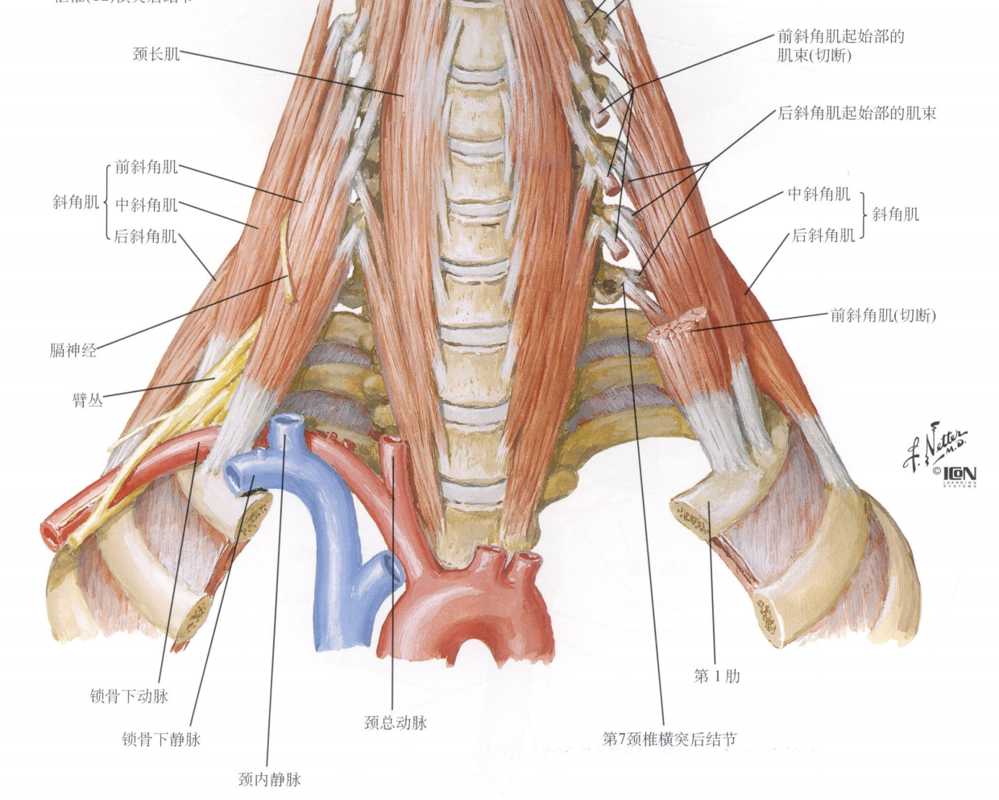
简述胸膜顶的位置及其主要毗邻关系。
位置：高出锁骨内侧1/3上缘2~3cm
毗邻
- 前方：锁骨下动脉
- 前外侧：前斜角肌、膈神经、迷走神经、锁骨下静脉、胸导管颈部（左）
- 后方：第1、2肋，颈交感干，第1胸神经前支
- 外侧：中斜角肌，臂丛
枕三角的境界及副神经的走行和损伤表现
枕三角：由胸锁乳突肌后缘、斜方肌前缘与肩胛舌骨肌下腹上缘构成
副神经在胸锁乳突肌后缘上、中1/3交点处进入枕三角，沿肩胛提肌表面下行，在斜方肌前缘中、下1/3交界点处进入该肌，被枕小神经勾绕是寻找副神经的标志
-
副神经损伤时，患侧胸锁乳突肌和斜方肌瘫痪，头不能向患侧侧屈，发生患侧肩下垂、提肩无力等临床表现
-
一侧胸锁乳突肌瘫痪：头向健侧倾斜，面转向患侧；向患侧屈头无力，向健侧转头无力
-
若在枕三角内损伤副神经，则损伤侧斜方肌瘫痪
胸部1
胸壁由浅入深的层次有哪些？（胸膜腔穿刺术需要经过的层次）
- 皮肤、浅筋膜、深筋膜、胸壁肌、肋间肌、胸内筋膜
胸内筋膜
- 衬于肋和肋间隙内面的致密结缔组织膜，向上覆盖于胸膜顶称为胸膜上膜，固定和保护胸膜顶，向下形成膈上胸膜或膈胸膜筋膜
胸廓内动脉的走形和分支。
-
胸廓内动脉起自锁骨下动脉第1段，锁骨下静脉后方紧贴胸膜顶前入胸腔，沿胸骨外侧第1~6肋软骨后面下行，至第6肋间隙分为肌膈动脉和腹壁上动脉
-
分支有：心包膈动脉、肋间前动脉、穿支
试述膈肌中裂孔的位置，高度与走行结构。
- 腔静脉孔
-
下腔静脉、右膈神经分支通过，约平T8
-
食管裂孔
-
食管、迷走神经通过，约平T10
-
主动脉裂孔
- 降主动脉、胸导管通过，约平T12
膈的腰肋三角构成和毗邻
- 位于膈的腰部与肋部起点之间，为尖向上的三角形区域，底为12肋，腰肋三角的前方与肾毗邻，后方有肋膈隐窝，故肾手术时小心撕破胸膜导致气胸
- 通常情况下，左侧的腰肋三角比右侧更大、更薄弱，因此临床上左侧的博赫达勒克疝更为常见
膈的胸肋三角的位置，通过的结构
- 膈的胸骨部与肋部的起点之间。有腹壁上血管和来自腹壁和肝上面的淋巴管通过
胸部2
胸膜隐窝与穿刺部位
- 肋膈隐窝是肋胸膜与膈胸膜相互转折处的胸膜隐窝，是胸膜腔的最低部位，深吸气时，肺下缘也不能充满此处，胸膜腔的积液首先聚集于此
- 穿刺部位：腋后线第7或者第8肋间隙；肩胛线第8或者第9肋间隙
- 肋纵隔隐窝：左侧较大
- 膈纵隔隐窝：仅存在于左侧
试述肺根内结构由上而下，从前向后的排列。
- 从前往后
-
左右肺均为：VABV（上肺静脉、肺动脉、主支气管、下肺动脉）
-
从上往下
-
左侧：ABVV（肺动脉、主支气管、上肺静脉、下肺静脉）
-
右侧：BABVV（上肺支气管、肺动脉、中下叶支气管、上肺静脉、下肺静脉）
动脉导管三角和动脉韧带
- 动脉导管三角的围成：左膈神经、左迷走神经、左肺动脉
- 是手术中寻找动脉导管的标志
纵隔左侧面观，食管上/下三角
食管上三角：由锁骨下动脉、主动脉弓与脊柱围成，内有胸导管和食管上段
食管下三角：由心包、胸主动脉和膈围成，内有食管下份
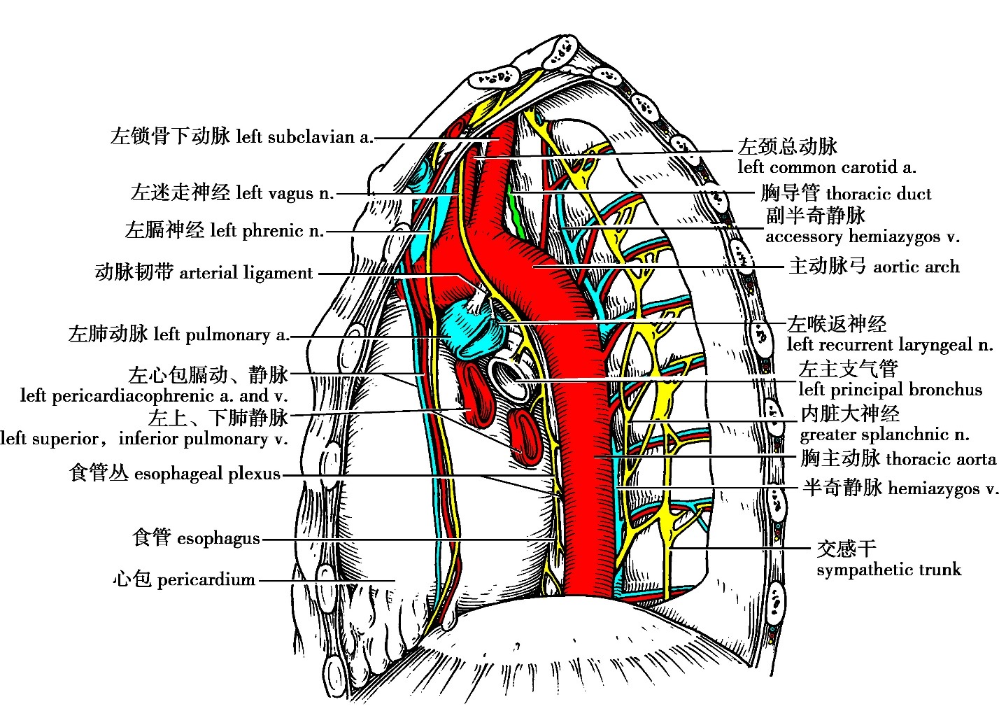
分别试述左右肺根的毗邻。
| 左肺根 | 右肺根 | |
|---|---|---|
| 上方 | 主动脉弓 | 奇静脉弓 |
| 下方 | 肺韧带 | 肺韧带 |
| 后方 | 左迷走神经、胸主动脉 | 右迷走神经、奇静脉 |
| 前方 | 左膈神经、心包膈血管 | 右膈神经、心包膈血管、上腔静脉、右心房、部分心包 |
试述纵隔境界与分区。
纵隔是左右纵隔胸膜之间的全部器官、结构和结缔组织的总称，位于胸腔正中偏左，呈上窄下宽，前短后长的矢状位
- 前界为胸骨和肋软骨内面
- 后街为脊柱胸段
- 两侧为纵隔胸膜
- 上为胸廓上口
- 下为膈
纵隔的分区：以胸骨角至第4胸椎体的下缘为界，将纵隔分为上纵隔和下纵隔
- 上纵隔（分为三层）
- 前层（胸腺—静脉层）：胸腺、左右头臂静脉、上腔静脉
- 中层（动脉层）：主动脉及其分支，膈神经，迷走神经
- 后层：气管，食管，胸导管，左喉返神经
- 下纵隔（前、中、后纵隔）
- 前纵隔：胸骨体与心包前壁之间的窄隙
- 内有：胸腺（或者胸腺残件）下部，纵隔前淋巴结，疏松结缔组织
- 中纵隔：心包、心包内大血管、心
- 心包腔的穿刺部位在左剑肋角
- 心包窦
- 心包横窦：位于升主动脉，肺动脉干与上腔静脉、左心房前壁之间的间隙
- 心包斜窦：位于左右肺静脉，下腔静脉，左心房后壁和心包后壁之间的间隙
- 心包前下窦
- 后纵隔：食管、胸主动脉、奇静脉、半奇静脉、胸导管、迷走神经、交感干胸部、纵隔后淋巴结等
试述食管前方的毗邻结构。
- 第4胸椎以上：气管、气管杈、主动脉弓、左锁骨下动脉、左喉返神经
- 第4胸椎以下：左主支气管（形成第二狭窄）、左心房的后面、左迷走神经、气管支气管淋巴结
食管的狭窄部
- 第1狭窄：食管的起始部，相当于第6颈椎的水平
- 第2狭窄：食管在左主支气管的后方与其交叉处，相当于第4胸椎体下缘
- 第3狭窄：食管通过膈的食管裂孔处，相当于T10水平，在正中线左侧2~3cm
试述后纵隔的境界及走行的结构。
- 前界： 心包后壁（即心包膈面）
- 后界： 第5-12胸椎体及椎间盘
- 上界： 胸骨角平面（与中纵隔和上纵隔分界）
- 下界： 膈
- 两侧： 纵隔胸膜
食管胸部、胸主动脉、奇静脉、半奇静脉、副半奇静脉、胸导管、迷走神经、内脏大、小神经、胸交感干、纵隔后淋巴结
腹前外侧壁
皮肤
- 腹壁皮肤的皮肤薄而有弹性，皮下组织疏松，除腹股沟区皮肤外，其他部位的伸展度和移动度大，可以适应腹部的膨隆，临床上常选择腹前外侧壁的皮肤作为游离皮瓣的供皮区
浅筋膜在脐平面以下可以分为两层
- 前层（脂肪层）：Camper筋膜，向下与股部的浅筋膜延续
- 深层（膜性层）：Scarpa筋膜，在中线除附着于白线，向下在腹股沟下方一横指处附着于阔筋膜，向下与阴囊肉膜，阴茎浅筋膜和会阴浅筋膜（Colles筋膜）相续
- 腹前外侧壁的深筋膜薄而不完整，这与腹壁的扩张有关
浅动脉
- 腹外侧壁：肋间后动脉、肋下动脉和腰动脉的分支，比较细小
- 腹前壁正中线附近：浅动脉来自腹壁上动脉和腹壁下动脉的分支
- 腹前外侧壁：下半部分有腹壁浅动脉和旋髂浅动脉
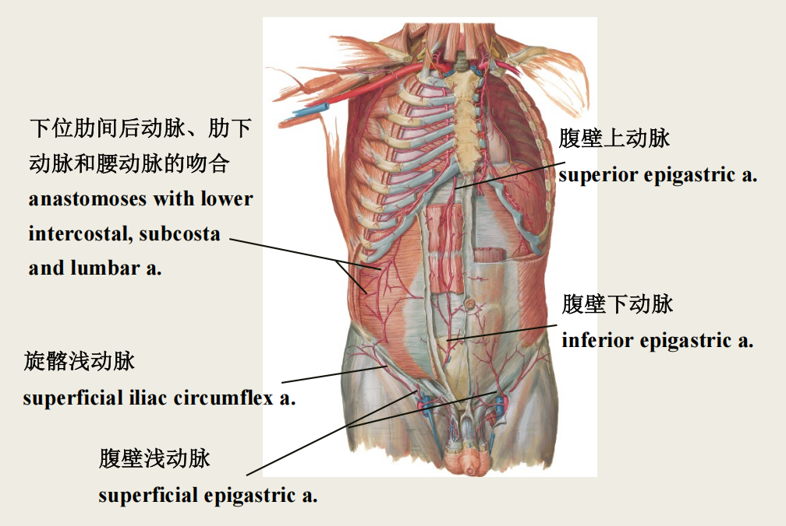
浅静脉
- 脐以上的浅静脉经过胸腹壁静脉回流入腋静脉
- 脐以下的浅静脉经过腹壁浅静脉汇入大隐静脉，再回流入股静脉
皮神经
- 前皮支从正中线两旁穿出，外侧皮支在腋中线的延长线处穿腹外斜肌浅出，在分布上有节段性
- 第8肋间神经分布于肋弓平面
- 第10肋间神经分布于脐平面
- 肋下神经分布于脐与耻骨联合平面
- 第1腰神经分布于腹股沟韧带的上方
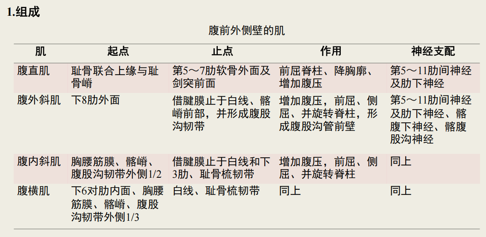
试述腹前外侧壁阔肌的层次、结构特点及其临床意义。
- 腹直肌，位于中线两侧，垂直走行，起于耻骨嵴、耻骨梳—>第5~7肋软骨
- 腹直肌鞘
- 肋缘平面以上，前层仅由腹外斜肌腱膜组成
- 脐以下4~5cm处，腹内斜肌的后层和腹横肌腱膜均转至腹直肌前面构成腹直肌鞘前层（弓状线）
- 锥状肌
- 白线：位于腹前正中线上，从剑突到耻骨联合和耻骨嵴的腱性结构
- 腹外斜肌：起于5~12肋的外面，肌纤维由外上斜向内下，在腹直肌外侧缘，髂前上棘与脐连线以下移行为腱膜
- 腹外斜肌形成的结构
- 腹股沟管浅环（皮下环、外环）：在耻骨结节外上方的三角形的裂隙
- 腹股沟韧带：腹外斜肌腱膜下缘附着于髂前上棘和耻骨结节之间，腱膜向后卷曲反折增厚形成
- 内外侧脚
- 腔隙韧带：腹股沟韧带内侧段的部分纤维向后下方转折增厚形成
- 耻骨梳韧带（Cooper韧带）：腔隙韧带向外侧延续附着于耻骨梳的部分
- 腹内斜肌、腹横肌及其形成物：
- 腹内斜肌
- 位于腹外斜肌的深面，起自于腹股沟韧带的外侧1/2或2/3和髂嵴及胸腰筋膜，肌纤维斜向上，后外侧肌纤维止于第10~12肋，其余在腹直肌外侧缘续行为腱膜，参与腹直肌鞘的构成，最后终止于白线
- 腹横肌
- 位于腹内斜肌深面，起自下位6对肋软骨的内面，胸腰筋膜，髂嵴和腹股沟韧带的外侧1/3
- 肌纤维横行向内侧，于腹直肌外侧缘移行为腱膜，经腹直肌后面参与形成腹直肌鞘后层的组成，止于白线
- 形成物
- 腹股沟镰，腹内斜肌和腹横肌的下缘呈弓形越过精索的上方，在腹直肌的外侧缘，精索的后方两者呈腱性结合形成腹股沟镰（联合腱），止于耻骨结节附近
- 提睾肌，腹内斜肌和腹横肌下缘的部分纤维沿精索下行，延续为菲薄的提睪肌，包裹精索和睾丸
做右下腹斜切口（麦氏切口）作阑尾切除术时，由浅入深经过哪些层次进入腹腔？
- 皮肤，浅筋膜、腹外斜肌腱膜、腹内斜肌、腹横肌、腹横筋膜、腹膜外筋膜、壁腹膜（不经过腹直肌鞘）
试述腹股沟管的位置、走行和二口四壁。
位置：位于腹股沟韧带内侧半的上方约1.5cm，由肌与腱膜形成的潜在性裂隙，长约4~5cm
- 两口
- 外口：浅环
-
内口：深环
-
四壁
- 前壁：皮肤、皮下组织，腹外斜肌腱膜
- 后壁：腹横筋膜、内侧1/3有腹股沟镰
- 上壁：腹内斜肌和腹横肌的弓状下缘
- 下壁：腹股沟韧带
腹股沟区的特点及其与腹股沟疝形成的关系，腹股沟斜疝与直疝的解剖学鉴别要点。
-
腹股沟区的境界：内侧界是腹直肌的外侧缘，上界是髂前上棘至腹直肌外侧缘的水平连线，下界为腹股沟韧带
-
腹股沟三角的境界：腹壁下动脉、腹直肌外侧缘、腹股沟韧带内侧半所围成的三角形区域，称为Hesselbach三角，直疝由此脱出
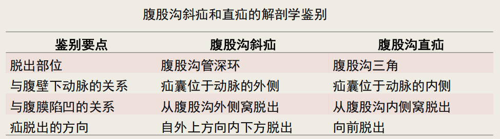
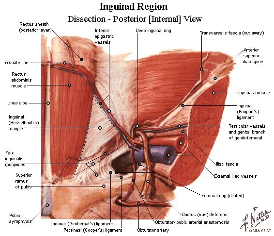
名词解释：腹直肌鞘、半环线（弓状线）、皮下环（浅环）、腹白线、腹环（深环）、腹股沟管、腹股沟三角、腹股沟镰（联合腱）
腹直肌鞘：包裹腹直肌和锥状肌的纤维性鞘状结构，由腹前外侧壁三层扁肌的腱膜构成
半环线：腹直肌鞘后层在脐下约4-5cm处（通常平髂前上棘水平）形成的凸向上的弧形游离下缘，此线以下，腹直肌鞘后层消失，腹直肌直接紧贴腹横筋膜，使得此区域腹壁相对薄弱。
浅环： 腹外斜肌腱膜在耻骨结节外上方形成的一个三角形裂隙。
腹白线：位于腹前壁正中线上，由两侧腹外斜肌、腹内斜肌和腹横肌腱膜的纤维交织而成的纤维带
深环：腹横筋膜在腹股沟韧带中点上方约一横指（1.5cm）处向外突出的一个卵圆形孔，是腹股沟管的内口。男性有精索（女性为子宫圆韧带）通过。腹股沟斜疝的疝囊即由此环进入腹股沟管。
腹股沟管：位于腹股沟韧带内侧半上方，由肌与腱膜构成的、长约4-5cm的潜在性裂隙
腹股沟三角：腹前壁下部的一个三角形区域，此三角区腹壁相对薄弱，无肌纤维覆盖。腹股沟直疝即由此三角区向前突出，其疝囊位于腹壁下动脉的内侧。这是手术中鉴别直疝和斜疝（疝囊位于腹壁下动脉外侧）的关键解剖标志
联合腱： 腹内斜肌腱膜和腹横肌腱膜在腹直肌外侧缘附近融合后，止于耻骨梳所形成的腱性结构
结肠上区
网膜孔和网膜囊的境界及临床意义；
- 网膜囊的境界：是小网膜和胃后壁与腹后壁的腹膜之间的一个扁窄间隙
- 前壁：小网膜，胃后壁的腹膜及胃结肠韧带
- 后壁：横结肠及其系膜以及覆盖在胰、左肾、左肾上腺等处的腹膜
- 上壁：肝尾状叶和膈下方的腹膜
- 下壁：大网膜前后层愈着处
- 左侧：脾、脾胃韧带、脾肾韧带
- 右侧：借网膜孔通腹膜腔其余部分
- 胃后壁穿孔时，胃内容物会首先流入网膜囊，导致局限性炎症或脓肿，初期症状可能不典型，并能一定程度上限制胃、十二指肠穿孔等引起的感染扩散，急性胰腺炎的渗出液常聚集于网膜囊
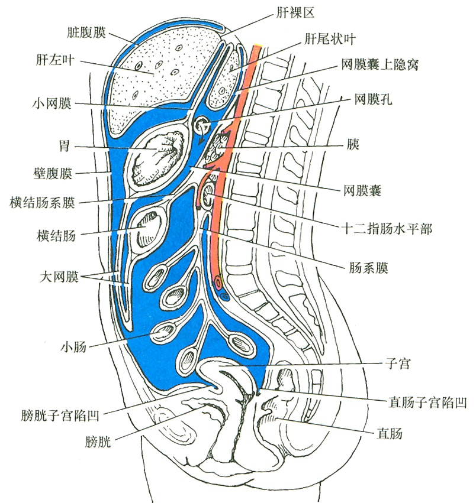
- 网膜孔的境界（winslow孔，约平T12~L2的高度）
- 上界：肝尾状叶
- 下界：十二指肠球
- 前界：肝十二指肠韧带
- 其中有胆总管、肝固有动脉及淋巴管，可以用于止血及检查胆总管结石
- 后界：覆盖在下腔静脉表面的腹膜
- 手术中，外科医生可将食指伸入网膜孔，拇指放在肝十二指肠韧带前方，进行触摸探查，可用于判断胆总管结石、门静脉血栓等，当肝、十二指肠出血时，可用手指捏住肝十二指肠韧带（即压迫其中的肝动脉和门静脉）以暂时控制出血，也是感染扩散的通道
膈下间隙（结肠上区）、结肠旁沟及肠系膜窦的位置、连通及其临床意义；
- 结肠上区（又称膈下间隙），介于膈与横结肠之间，被肝分为肝上间隙和肝下间隙
-
肝上间隙借镰状韧带和左三角韧带分为：右肝上间隙（右肝上间隙是最大的膈下间隙），左肝上前间隙，左肝上后间隙
-
肝下间隙以肝圆韧带分为右肝下间隙，左肝下间隙
- 左肝下间隙又被小网膜和胃分为左肝下前间隙、左肝下后间隙（即网膜囊）
- 右肝下间隙（肝肾隐窝）： 位于肝右叶下面与右肾、结肠右曲之间。这是平卧位时腹膜腔的最低点之一，积液易在此积聚
-
网膜囊在生理状况下可以增加胃的活动度，感染积脓或胃后壁穿孔积液，开始时往往局限在网膜囊内，随着脓液的增多可经过网膜孔流入右肝下间隙（肝肾隐窝），向上可扩展到右肝上间隙，向下可以沿右结肠旁沟至右髂窝，甚至达到盆腔的直肠膀胱陷凹或者直肠子宫陷凹
-
直肠子宫陷凹是直立时的最低处，可以通过穿刺观察血型腹膜腔积液判断是否有宫外孕
-
由于肝镰状韧带的有效分隔，右肝下间隙的脓液无法直接向上扩展到左肝上间隙
-
flowchart TD
A[网膜囊内脓液] --> B{"网膜孔<br>是否通畅?"}
B -- 是 --> C["<b>主要路径：经网膜孔</b><br>进入右肝下间隙<br>（肝肾隐窝）"]
C --> D[右结肠旁沟]
D --> E[盆腔]
B -- 否/受阻 --> F["<b>次要/局限路径</b>"]
F --> G["向下: 经网膜囊下口<br>进入肠系膜窦与盆腔"]
F --> H["向左: 进入脾肾隐窝<br>进一步至左结肠旁沟"]
F --> I["向上: 积聚于网膜囊上隐窝<br>（肝尾状叶与膈之间）"]
F --> J["向后: 侵蚀胰腺被膜<br>进入腹膜后隙"]
- 结肠下区包括四个间隙：左右结肠旁沟及左右肠系膜窦
- 结肠旁沟
- 左结肠旁沟：降结肠与左侧腹壁之间的裂隙，由于膈结肠韧带的限制，不与结肠上区相通，但是向下通盆腔
- 右结肠旁沟：升结肠和右侧腹壁之间的裂隙，向上通肝肾隐窝，向下经右髂窝通盆腔
- 肠系膜窦
- 左肠系膜窦：为肠系膜根与降结肠之间的斜方形间隙，向下通盆腔
- 右肠系膜窦：为肠系膜根与升结肠之间的三角形间隙，下方有回肠末端相隔，几乎封闭，容易形成局限性腹膜炎
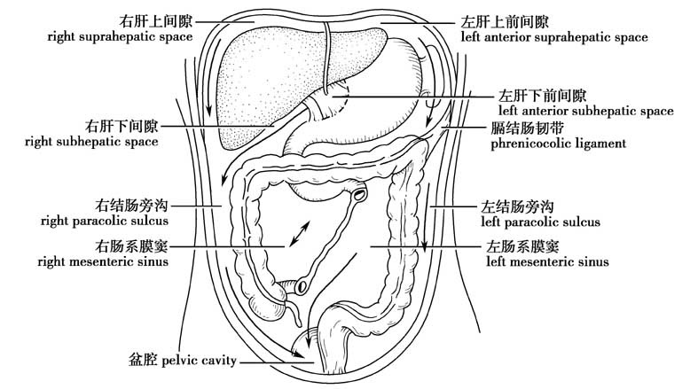
试述胃的位置、毗邻及血供；
- 位置：中等充盈时，大部分位于左季肋区，小部分位于腹上区
- 毗邻
- 胃前壁
- 右侧：左半肝
- 左侧：上部：膈；下部：腹前壁，此部移动度大，称为胃前壁的游离区
- 胃后壁：隔网膜囊与胰、左肾上腺、左肾、脾、横结肠及其系膜相邻，这些器官共同形成胃床
- 血供
- 动脉（小弯动脉弓、大弯动脉弓）
- 胃左动脉：起自腹腔干
- 胃右动脉：起自肝固有动脉
- 胃网膜右动脉：起自胃十二指肠动脉
- 胃网膜左动脉：起自脾动脉末端
- 胃短动脉和胃后动脉
- 静脉（均汇入肝门静脉系统）
- 胃右静脉：汇入注入肝门静脉
- 胃左静脉：汇入肝门静脉或脾静脉
- 胃网膜右静脉：汇入肠系膜上静脉
- 胃网膜左静脉：汇入脾静脉
- 胃短静脉：汇入脾静脉
- 胃后静脉：汇入脾静脉
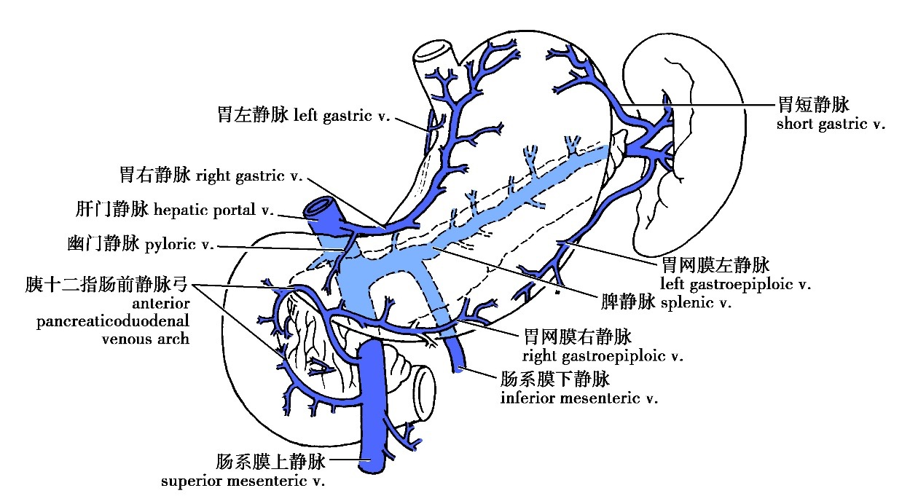
胃后壁穿孔时，胃内容物可通过什么结构到达何部位？
flowchart TD
A["胃后壁穿孔"] --> B["<b>首先进入</b><br>网膜囊"]
B --> C{"网膜孔是否通畅?"}
C -- 是 --> D["<b>主要路径</b><br>经网膜孔溢出"]
D --> E["进入右肝下间隙<br>（肝肾隐窝）"]
E --> F["沿右结肠旁沟<br>向下流动"]
F --> G["到达盆腔"]
C -- 否/受阻 --> H["<b>局限或另寻路径</b>"]
H --> I["局限于网膜囊内<br>形成脓肿"]
H --> J["向下: 进入肠系膜窦与盆腔"]
H --> K["向左: 进入脾肾隐窝"]
十二指肠的分段及各段毗邻；
- 上部：长约4~5cm，形成十二指肠上曲，上部近侧段黏膜面平坦无皱襞，称为十二指肠球
-
毗邻
- 前上方：肝方叶和胆囊
- 下方：胰头和胰颈
- 后方：胆总管、胃十二指肠动脉、肝门静脉及下腔静脉
-
降部：长约7~8cm，形成十二指肠下曲，降部后内侧壁上有十二指肠大乳头和小乳头，分别胃肝胰壶腹和副胰管的开口
-
毗邻
- 前方：被横结肠及其系膜分为上下两段，分别与肝右前叶及小肠袢相邻
- 后方：右肾门，右肾血管及右输尿管相邻
- 内侧：紧邻胰头，胰管及胆总管
- 外侧：有结肠右曲
-
水平部：长约10~12cm
-
毗邻
-
上方：胰头及钩突
-
后方：有右输尿管、下腔静脉和腹主动脉
-
前方：右侧与小肠袢相邻，左侧有肠系膜上动静脉
- 十二指肠上动脉压迫综合征（Wilkie综合征）
-
-
升部：长约2~3cm，形成十二指肠空肠曲
-
毗邻
- 左侧：十二指肠上襞（十二指肠空肠襞）
- 右侧：毗邻胰头与腹主动脉
十二指肠悬韧带：十二指肠悬肌由肌纤维和结缔组织构成，从十二指肠空肠曲上面向上连至右膈脚。十二指肠悬肌与包绕其表面的腹膜皱襞共同构成十二指肠悬韧带或Treitz韧带，是寻找空肠起始部位的标识，起上提和固定十二指肠空肠曲的作用
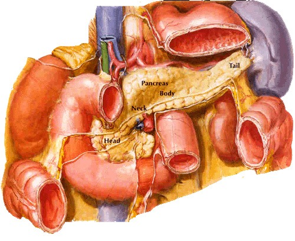
十二指肠的血供
-
十二指肠血液供应主要来自胰十二指肠上、下动脉
-
胰十二指肠上动脉起于胃十二指肠动脉，分为胰十二指肠上前、后动脉
-
胰十二指肠下动脉起于肠系膜上动脉，分为胰十二指肠下前、后动脉
-
静脉：与相应动脉伴行，除了胰十二指肠上后静脉直接汇入肝门静脉以外，其余均汇入肠系膜上静脉
肝的位置与毗邻，肝门与肝蒂；
- 大部分位于右季肋区，小部分位于左季肋区，左右肋弓之间的部分与腹前壁相贴
- 毗邻
- 肝右叶
- 膈面：借膈与右肋膈隐窝、右肺底相邻
- 脏面：前部结肠右曲，中部十二指肠上曲，后部右肾、右肾上腺
- 肝左叶
- 脏面：胃前壁
- 后上方：食管腹部
- 肝门：肝脏面中部的横沟，出入的结构有肝左右管，肝门静脉左右支和肝固有动脉左右支，淋巴管及神经等
- 第二肝门：在膈面腔静脉沟的上部，肝左、中、右静脉出肝处
- 第三肝门：在腔静脉沟下部，肝右后下静脉和尾状叶静脉出肝处
- 肝蒂：出入肝的结构被结缔组织包绕，走行于肝十二指肠韧带内，在韧带内胆总管位于肝门静脉的右前方、肝固有动脉的右侧
胆囊三角的构成及内容，胆总管的分段、毗邻和临床意义；
- 胆囊三角（Calot三角）由胆囊管、肝总管和肝下面三者组成，内常有胆囊动脉通过。
肝外胆道与胆囊
- 肝外胆道由肝左、右管、肝总管、胆囊和胆总管组成
- 胆囊借疏松结缔组织附着与肝脏面的胆囊窝内，其下面覆有腹膜
- 胆囊颈起始部膨大，形成Hartmann囊，胆囊结石多停留在此囊中
- 胆囊底的体表投影：右锁骨中线或腹直肌外缘与右肋弓的交点
胰的分部与毗邻，患胰头癌时可压迫哪些结构，引起哪些症状？
- 胰腺是一个位于腹膜后隙的狭长腺体，通常分为头、颈、体、尾四部分，除胰尾外均属于腹膜外位
- 胰头：位于胰腺右端，被十二指肠呈“C”形环绕和固定
- 前面：横结肠系膜通过，并与空肠相毗邻
- 后面：下腔静脉，右肾静脉及胆总管下行
- 胰颈：胰头与胰体之间较狭窄的部分
- 前面：邻接胃幽门
- 后面：有肠系膜上静脉通过，并与脾静脉汇合为肝门静脉
- 胰体：位于L1平面，脊柱前方，并稍向前凸起
- 前面：隔网膜囊与胃后壁相邻
- 后面：有腹主动脉、左肾上腺、左肾及脾静脉
- 上缘：与腹腔干、腹腔丛相邻
-
胰尾：胰左端的狭细部分，末端达脾门，行经脾肾韧带的两层腹膜之间，固有一定的移动性
-
胰头癌可引起的症状
- 进行性无痛性黄疸：胆总管下端行走于胰头后部，并被其包绕。肿瘤压迫胆总管，导致胆汁排出受阻
- 梗阻、消化不良：压迫十二指肠
- 门静脉高压：肿瘤压迫门静脉或其属支，导致门静脉系统血液回流受阻
- 下肢水肿、腹壁静脉曲张：压迫下腔静脉
- 剧烈且顽固的腰背部疼痛：胰腺后方的腹腔神经丛受肿瘤浸润
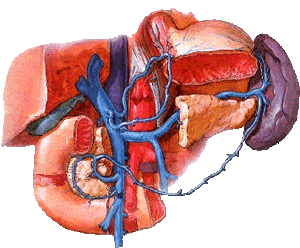
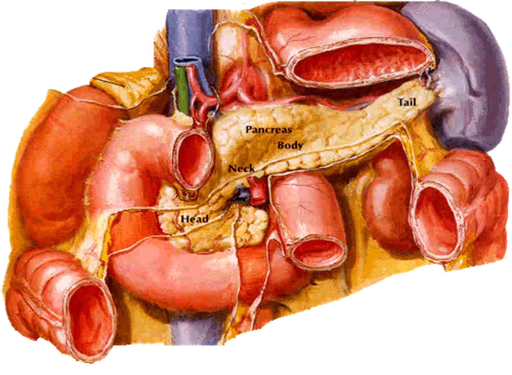
名词解释：网膜孔、胃床、肝十二指肠韧带、肝胰壶腹、Oddi括约肌
网膜孔：又称Winslow孔，是网膜囊（小腹膜腔）与腹膜腔其余部分（大腹膜腔）相通的唯一通道
胃床：指胃后壁隔网膜囊与之相邻的器官和结构的总称，包括：胰、左肾、左肾上腺、横结肠及其系膜、脾
肝十二指肠韧带：是小网膜的右侧部分，连接肝门与十二指肠上部，呈游离状态，其右缘构成网膜孔的前界
肝胰壶腹：又称Vater壶腹，是胆总管末端与胰管末端汇合后，在十二指肠降部后内侧壁膨大形成的共同通道。
Oddi括约肌：环绕在肝胰壶腹周围以及胆总管末端和胰管末端的复杂括约肌束
结肠下区
肠系膜及其形成的结构
- 双层腹膜构成，呈扇形
- 肠系膜根
- 从L2左侧斜向右下，至右骶髂关节的前方，长约15cm
- 跨过：十二指肠水平部，腹主动脉，下腔静脉，右输尿管，右腰大肌
- 系膜三角：系膜缘处的肠壁与两层腹膜围成三角形的腔隙
空肠和回肠形态的比较
| 空肠 | 回肠 | |
|---|---|---|
| 位置 | 近侧2/5，位于结肠下区左上部 | 远侧3/5，位于结肠下区右下部 |
| 管径 | 较粗 | 较细 |
| 管壁 | 较厚 | 较薄 |
| 环状襞 | 多而高 | 疏而低 |
| 淋巴滤泡 | 孤立淋巴滤泡 | 集合淋巴滤泡、孤立淋巴滤泡 |
| 血管弓 | 少，1~2弓，脂肪少 | 多，3~4级弓，脂肪多 |
| 颜色 | 较红 | 较淡 |
盲肠形态结构特征；回盲瓣的位置及其临床意义；
- 长约6~7cm，位于右髂窝内，作为大肠的起始部，盲肠以膨大的盲端开始，上部延续于升结肠，左侧接回肠末端，后内侧壁有阑尾附着，右侧为右结肠旁沟，后面有右髂腰肌和股外侧皮神经，前面邻腹前壁，并常被大网膜覆盖，为腹膜内位器官，活动度小
- 回盲瓣：盲肠左后壁上回肠的开口处，黏膜形成两个半月形皱襞
- 上瓣膜位于回肠和结肠交界处，呈水平位
- 下瓣膜更长，更凹陷，位于回肠和盲肠连接处
-
可以控制回肠内容物流入大肠的速度，防止大肠内容物逆流
-
回盲部：盲肠、回肠末端和阑尾的合称
- 由于回肠的管径小于盲肠，二者的连接处接近直角，回盲部的肠套叠多见
阑尾常见位置及其毗邻关系，阑尾根部的体表投影和寻找阑尾的方法；
-
回肠前位，约28%，盆位，约26%，盲肠后位：24%
-
长约6~8cm，直径约0.5~0.6cm，为蚓状突起，在回盲瓣的下2~3cm处开口于盲肠的内面，属于腹膜内位器官
-
阑尾血供
-
回结肠动脉分支的阑尾动脉，为终末动脉，血运异常时容易导致阑尾坏疽和穿孔
-
阑尾静脉与同名静脉伴行，经过回结肠静脉汇入肠系膜上静脉，最终汇入肝门静脉，阑尾炎症时，细菌栓子可以脱落引起肝门静脉炎
-
体表投影
-
McBurney点：脐至右髂前上棘连线的中、外1/3交界处
-
Lanz点：左、右髂前上棘连线的中、右1/3交界处
-
阑尾系膜是一个将阑尾连接至回肠末段肠系膜的小三角形腹膜皱襞
-
盲肠表面有三条结肠带（结肠系膜带、网膜带、独立带），向下汇聚于阑尾根部，是手术中寻找阑尾的重要标志
肝门静脉的组成及其主要属支；肝门静脉系统的解剖学特点；吻合部位在门静脉高压症时的临床意义。
- 在L2高度，由肠系膜上静脉和脾静脉汇合而成
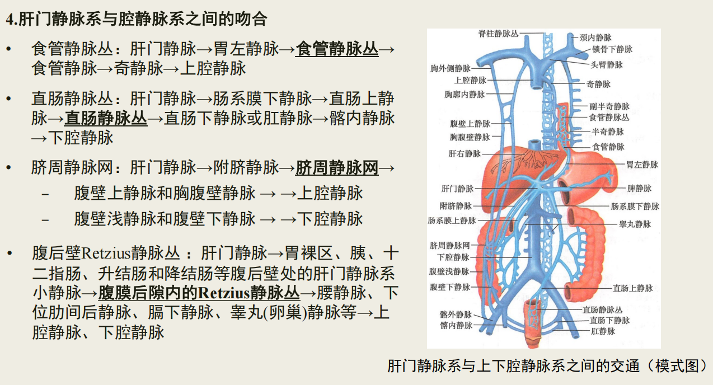
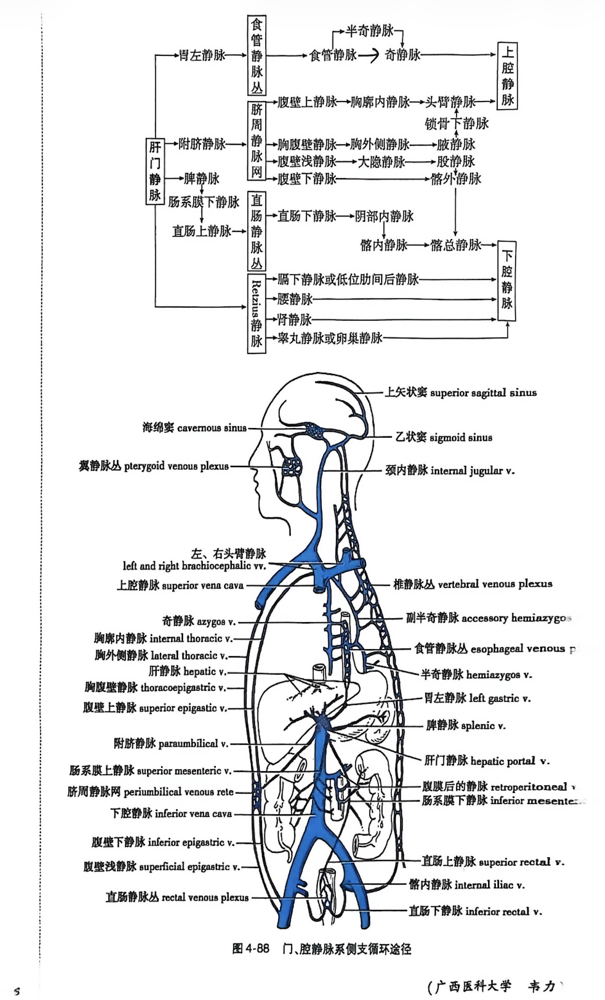
腹膜后隙的概念及结构特点；
-
位于腹后壁，介于壁腹膜和腹内筋膜之间，上界为膈，经过腰肋三角与后纵隔相通，下至骶骨岬，与盆腔腹膜后隙相通，两侧向外延为腹前外侧壁的腹膜外筋膜
-
该间隙向上经过腰肋三角通后纵隔，下至盆腔的腹膜后隙相续，因此腹膜后隙的感染可以向上或者向下蔓延
- 腹膜后隙的器官手术，多采用腰腹部斜切口入路
肾的位置、被膜、毗邻关系及肾门结构的排列关系；
- 肾为腹膜外位器官，帖附于脊柱两侧的腹后壁
- 右肾上端平第12胸椎体上缘，下端平第3腰椎体上缘
- 左肾上端平第11胸椎体下缘，下端平第2腰椎体下缘，右肾位置低于左肾约1~2cm
- 第12肋斜过左肾后面的中部，右肾后面的上部
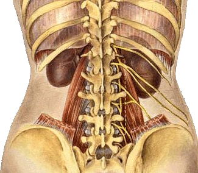
- 被膜：（由外向内）
- 肾筋膜（Gerota筋膜）：位于脂肪囊的外面，分为前后两层，包被肾上腺和肾
- 肾前筋膜：前层为肾前筋膜，覆盖在肾、肾上腺及其血管的前面，并越过腹主动脉和下腔静脉的前面，与对侧的肾筋膜前层相接
- 肾后筋膜：覆盖在肾及肾上腺的后面
- 在肾下方并不愈合，与直肠后隙相通
- 脂肪囊（肾床）：位于肾筋膜的深面，囊状脂肪组织层
- 纤维囊（肾纤维囊）：是肾的固有被膜，由致密结缔组织和弹性纤维构成，薄而坚韧
- 正常时，包裹于肾实质的表面，容易剥离
- 病理状态下，与肾实质粘连，不易剥离
- 在肾破裂或行肾部分切除术时，应该缝合此膜
- 毗邻⭐️
- 上方：肾上腺
- 内后方：腰交感干
- 内下方：肾盂和输尿管
- 内侧
- 左肾：腹主动脉
- 右肾：十二指肠降部和下腔静脉
-
前面
- 左肾：上部邻胃后壁；中部邻胰尾、脾血管；下部邻空肠
- 右肾：上部邻肝右叶；下部邻结肠右曲
-
肾门：为肾内侧缘中部的凹陷处，有肾血管、肾盂、淋巴管、神经通过
- 肾蒂：出入肾门的血管、肾盂、神经和淋巴管等结构为结缔组织所包裹的称为肾蒂
- 由前向后：肾静脉、肾动脉、肾盂
- 由上而下：肾动脉，肾静脉，肾盂
输尿管毗邻及狭窄部位位置；
-
毗邻
-
右输尿管：
- 前方：十二指肠降部、升结肠血管、回结肠血管，右睾丸血管或卵巢血管及回肠末段
- 右侧：盲肠和阑尾
-
左输尿管：
- 前方：十二指肠空肠曲，降结肠血管及左睾丸血管或卵巢血管，乙状结肠
-
输尿管的狭窄
| 狭窄顺序 | 名称 | 位置特点 | 临床重要性 |
|---|---|---|---|
| 第一狭窄 | 肾盂输尿管连接部 | 输尿管起始端 | 结石下行时第一个可能卡住的关卡 |
| 第二狭窄 | 输尿管跨髂血管处 | 骨盆入口，跨越髂总动脉前方 | 因血管压迫而形成的狭窄 |
| 第三狭窄 | 输尿管壁内段 | 膀胱壁内斜行部分 | 最狭窄，是结石最易嵌顿的部位 |
肾上腺位置、毗邻和供血特点；
-
位置：位于脊柱两侧，平T11高度紧贴肾上端，与肾共同包在肾筋膜内
-
左右肾上腺的毗邻不同：
-
左肾上腺前面以网膜囊与胃后壁相邻，下部与胰尾、脾血管相邻，内侧缘紧邻腹主动脉
-
右肾上腺前面为肝右叶，前面的上部与肝裸区相邻，内侧缘紧邻下腔静脉
-
两肾后面：【第 12 肋以上】与膈、胸膜腔相邻；【第 12 肋以下】（内）腰大肌、生殖股神经、
腰方肌、髂腹下神经、髂腹股沟神经（外）
-
血供
-
动脉
- 肾上腺上动脉：起自膈下动脉
- 肾上腺中动脉：起自腹主动脉
- 肾上腺下动脉：起自肾动脉
- 静脉
- 左肾上腺静脉：汇入左肾静脉
- 右肾上腺静脉：汇入下腔静脉
腹主动脉的行程、毗邻及主要的分支；
- 为腹主动脉的延续，在第12胸椎下缘穿膈的主动脉裂孔进入腹膜后隙，腹主动脉在腰椎左前方下降，至第4腰椎下缘水平分为左、右髂总动脉
- 毗邻：
- 前面：肝左叶，网膜囊，胰，十二指肠水平部和小肠系膜根和小肠袢，左肾静脉、脾静脉、腹腔丛和主动脉丛
- 后面：第1~4腰椎及椎间盘，第2~4左腰静脉
- 右侧：下腔静脉，上部还有右膈脚，右内脏大神经，乳糜池和胸导管起始部
- 左侧：左交感干腰部，肠系膜下动脉
腰交感干组成和行程；乳糜池位置及收集范围；
-
腰交感干
-
由4~5对腰交感神经节和连于其间的节间支组成
-
位置：腰椎体的前外侧，腰大肌的内侧缘
-
乳糜池：是胸导管起始部的膨大
- 位置：位于腹膜后隙，第1腰椎体的前方和腹主动脉的右后方
- 接受肠干和左、右腰干，除了运输淋巴以外，尚运输来自消化管吸收的乳糜
肠系膜下动脉的分支
flowchart TD
A["肠系膜下动脉<br>（第3腰椎水平发起）"] --> B["左结肠动脉"]
A --> C["乙状结肠动脉<br>（通常2-4支）"]
A --> D["直肠上动脉<br>（终末支）"]
B --> B1["升支：与中结肠动脉吻合<br>供应降结肠上份/结肠脾曲"]
B --> B2["降支：与乙状结肠动脉吻合<br>供应降结肠下份"]
C --> C1["形成血管弓<br>供应乙状结肠"]
D --> D1["供应直肠上部"]